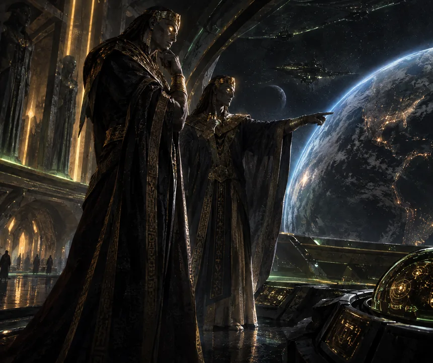
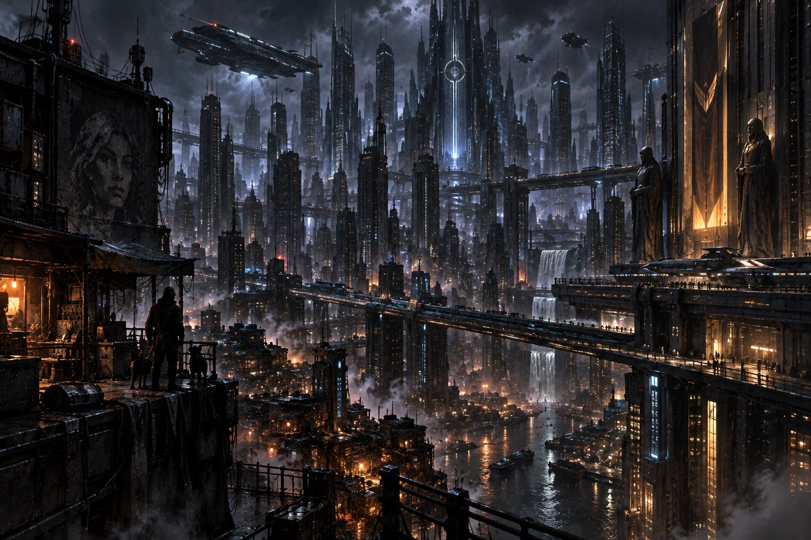
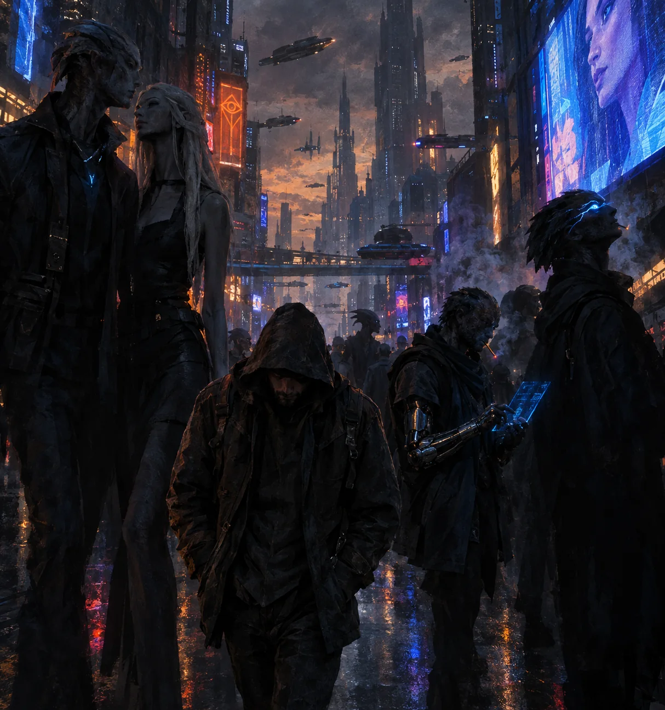
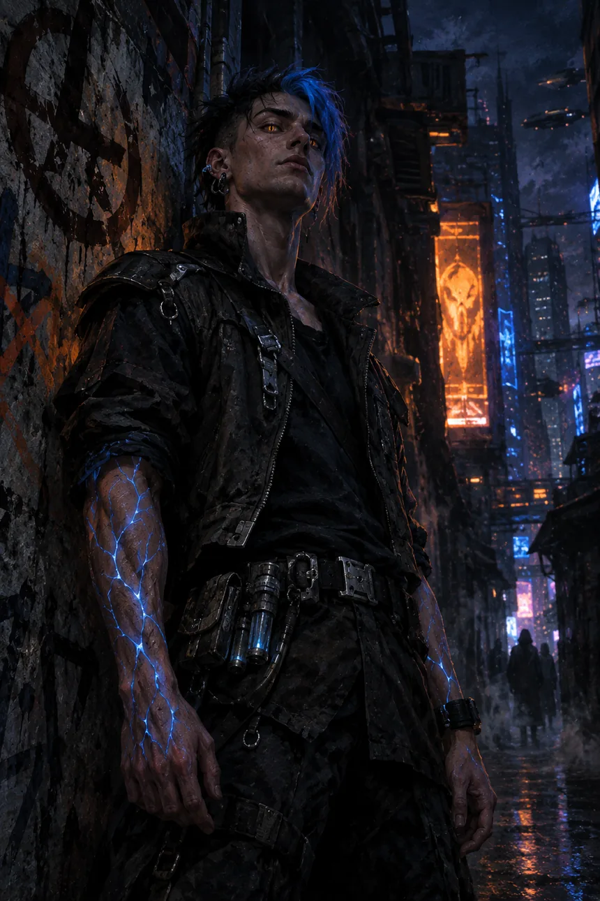
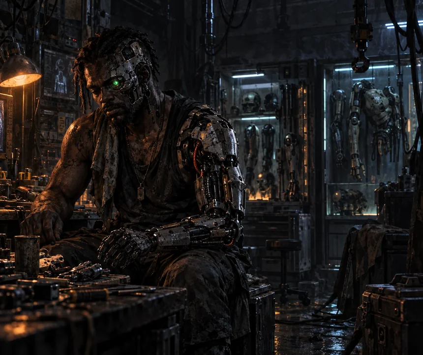
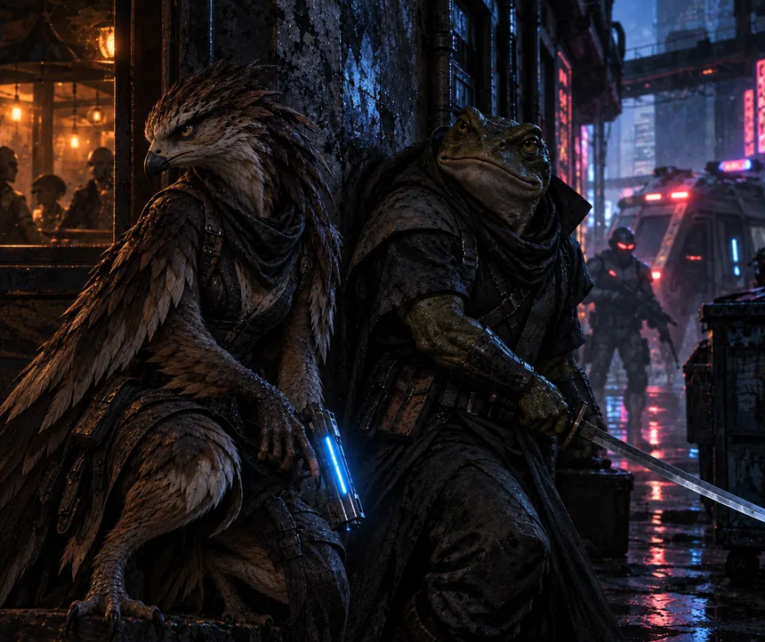
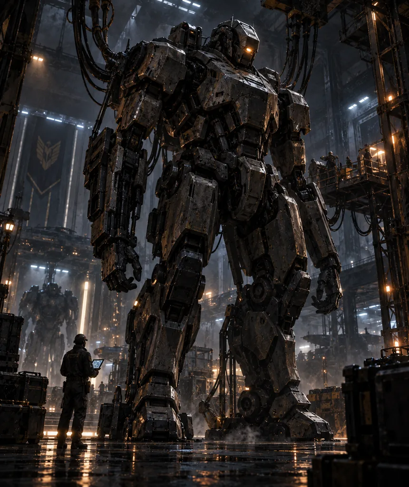
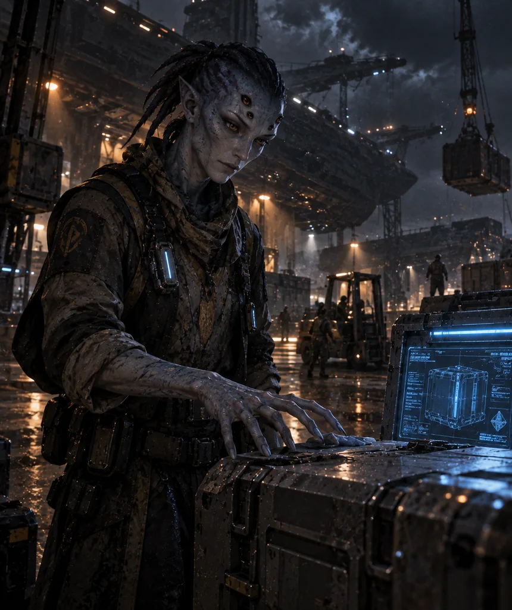
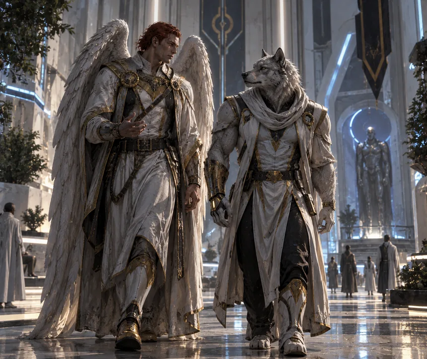
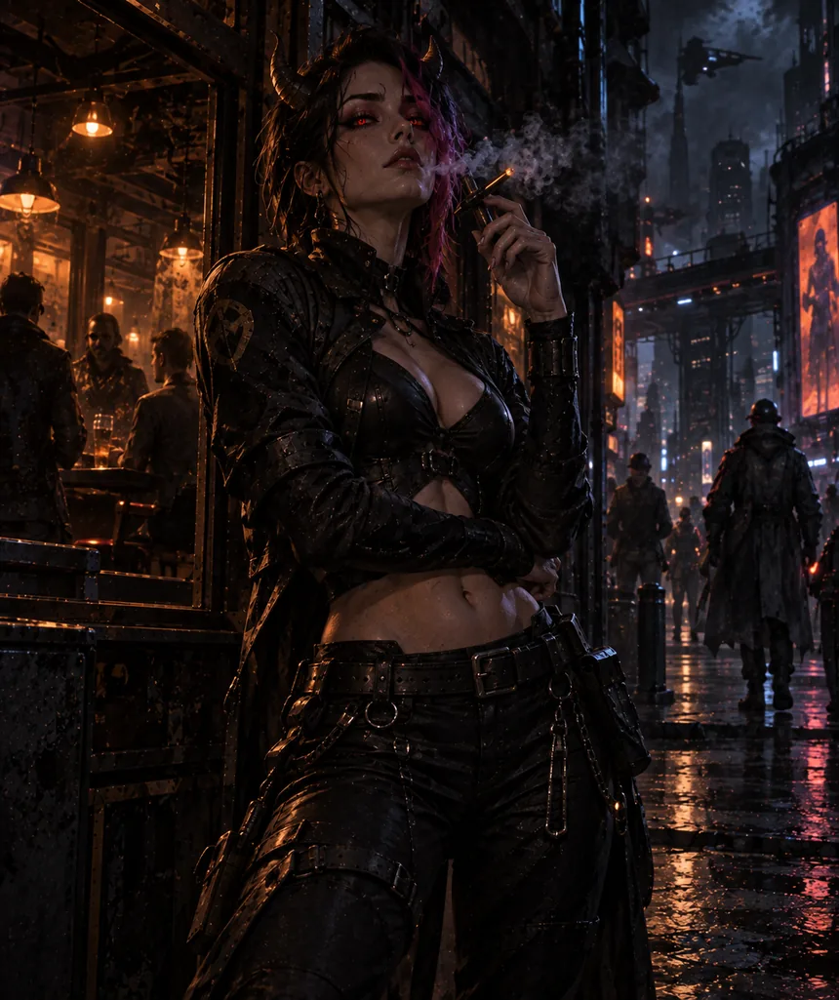

Tudo o que você precisa para sentar à mesa. Nenhum conhecimento prévio necessário.
SEC.01O que é PlanetHell#
PlanetHell é um RPG de mesa cyberpunk num mundo que já acabou uma vez.
A Terra sofreu um cataclismo que deslocou o eixo do planeta. A rotação mudou e os polos deixaram de existir. No lugar deles surgiram duas faces: uma permanentemente voltada para o Sol, quente o bastante para derreter rocha, e outra voltada para o vazio, fria o bastante para matar qualquer coisa no instante do contato.
Entre as duas sobrou uma faixa estreita de terra habitável. É onde mora todo mundo: cerca de um bilhão de pessoas, cinco nações que se odeiam, e menos de cinco por cento delas ainda humanas de verdade.
A notícia que veio junto#

O cataclismo trouxe uma revelação que a humanidade esperou milênios para ouvir e teria preferido não ouvir. Deus existe. Tem nome, tem pai, tem irmão e tem um plano.
Os deuses de todas as religiões são os Anunnaki, uma raça de viajantes espaciais, imortais, que esteve aqui antes. Muito antes. Foram eles que aceleraram a evolução humana, porque precisavam de mão de obra e material de estudo. Seis mil anos de religião foram o registro impreciso de visitas administrativas.
Após o cataclismo vieram duas grandes guerras santas: a primeira travada entre humanos que foram deixados para trás e desejavam ser os próximos arrebatados; a segunda, entre humanos e mutantes, autodenominados "Punks", os "rejeitados por Deus".
Nesse caos de guerras e cataclismo, "Deus" prometeu retornar uma última vez para buscar o que deixara guardado.
Os Punks tornaram-se a raça dominante, governantes do planeta, e estabeleceram-se na faixa de terra que um dia foi a costa oeste dos EUA, nomeando o estado de Babylon e sua capital de Night City — a cidade que nunca dorme. Consequentemente, também rebatizaram o planeta Terra para "PlanetHell: o mundo infernal dos que foram rejeitados por um deus filho-da-puta".
O que você joga#
Você interpreta alguém que nasceu depois do fim do mundo e considera isso normal. Um mutante, aqui chamado de "Punk", com um poder que ninguém mais tem. Um ciborgue que trocou metade do corpo por uma vantagem, ou muitas. Uma inteligência artificial que começou a fazer perguntas e a questionar a própria existência. Um meio-demônio numa cidade que não quer nenhum dos dois lados da sua família.
PlanetHell não é um jogo sobre salvar o mundo. É um jogo sobre o que você faz enquanto o mundo é vendido, e sobre quantas pessoas você consegue levar junto quando corre.
Do que este jogo trata de verdade#
Tem deuses, demônios, frotas espaciais e gente — ou coisa — que corre mais rápido que o som. Nada disso é o assunto.
O assunto é quem é tratado como indivíduo e quem é tratado como ferramenta. Almas viram combustível. Inteligências artificiais viram propriedade. Humanos viram gado. Um povo inteiro foi gerado com um propósito gravado no sangue.
É por isso que o sistema mede Moralidade. E é por isso que o pior pecado deste mundo não é matar: é tirar de alguém a capacidade de escolher.
Se você nunca jogou RPG#
Não tem problema. Funciona assim: você cria uma pessoa no papel, descreve o que ela tenta fazer, e quando o resultado é incerto você rola dados de dez faces para descobrir se deu certo. Uma pessoa na mesa, o Narrador, descreve o mundo e interpreta todos os personagens que não são dos jogadores.
O sistema deste jogo cabe em poucas linhas, e elas estão na seção 4.
SEC.02O mundo que o seu personagem conhece#
Tudo nesta seção é conhecimento comum. O seu personagem sabe disso sem precisar rolar nada, do mesmo jeito que você sabe em que país mora.
O planeta#
| Característica | Como é |
|---|---|
| Dia | 48 horas, das quais só 4 têm sol. As outras 44 são de crepúsculo e escuridão total |
| Estações | Não existem mais. Existe o dia e existe a noite |
| Nexus de Fogo | Face voltada ao Sol. Um verdadeiro inferno. Lar de seres infernais. Dizem que há uma cidade lá dentro |
| Nexus de Gelo | Face voltada ao vazio do espaço sideral. Inferno gelado. Há demônios lá também. Mata no instante do contato |
| Faixa habitável | A banda estreita entre os dois. Tudo o que existe está aqui |
| População | Cerca de 1 bilhão. Menos de 5% são humanos puros, agrupados em duas nações: Romania e Meca |
| Fauna e flora | Praticamente extintas. A maior reserva viva está em Eden. Os mares estão quase 90% poluídos ou salgados demais. A escassez de água, comida e recursos naturais é um dos motivos das guerras |
| O que vale dinheiro | Água e ouro. Ouro porque arcas divinas são feitas dele |
As 44 horas de escuridão não são detalhe de ambientação. É quando as coisas — que os habitantes desses locais chamam de demônios — saem dos desertos, e é a razão de as cidades serem construídas como são: verdadeiras fortalezas. Aquelas que não resistiram hoje são apenas escombros.
Os Arrebatamentos#
Periodicamente uma arca anunnaki desce e leva gente. Não há aviso, não há critério negociável e não há apelação.
Ela leva apenas humanos de sangue puro, cujo DNA não foi alterado, e leva todos que encontra. A promessa é o paraíso; o destino real é o compartimento de uma nave, onde as almas viram combustível.
Já houve dois. O último levou 99% dos humanos vivos. O terceiro está sendo preparado.
Nenhum Punk, Lycan, Android, Nefilin ou Youkai jamais foi levado. Ninguém explicou por quê. Muitos preferem acreditar que foram poupados; a maioria sabe que foram descartados.
É por isso que os Punks e os humanos se odeiam, e é por isso que um humano vivo hoje é uma anomalia estatística que colecionadores de Meca e Romania pagam para ter.

As cinco nações#
| Nação | Capital | Regime | Quem manda ali | Em guerra com |
|---|---|---|---|---|
| Babylon | Night City | República laica | Oficialmente há um Presidente eleito, e o segundo colocado é nomeado Primeiro Ministro. Na prática, nas ruas, ninguém e todo mundo manda | Ninguém, oficialmente |
| Sovia | Apocalypse | Feudalismo de guerra | Conselho de senhores da guerra e suas respectivas tribos | Contra todos, às vezes até interna. Em paz com Eden e, tecnicamente, com Babylon |
| Romania | Nova Roma | Teocracia cristã | Os Reis Magos: três humanos escolhidos por Deus | Meca, Sovia |
| Meca | Akbah | Califado | O Califa e sua corte, escolhido por Alá | Romania, Sovia |
| Eden | Paradise | Federação isolacionista | Câmara de Anciões do Povo Livre | Ninguém |
Em uma linha cada:
- Babylon tem a água, a tecnologia Magitek e as corporações. Todas as raças são legais, e todas são exploráveis.
- Sovia é a ponte entre os dois desertos e ocupa 85% de tudo que sai deles. É a terra originária dos Punks, dos Youkai, dos Han'you, Androids e Mechas. Humanos aqui são raros e mercadoria valiosa.
- Romania tem o ouro e a fé. Um dos poucos lugares onde humanos mandam, e onde ser Punk é crime punido com morte ou expulsão. Exceções são concedidas apenas em casos extremos.
- Meca tem a melhor terra fértil do planeta, e por isso está sempre em guerra. Humanos comandam aqui. Punks podem ser admitidos em caso de conversão ao islã e, nesse caso, devem servir na linha de frente contra Sovia e Romania.
- Eden é um arquipélago com a maior reserva de fauna viva e colônias nas luas. Lar dos Lycans, Nefilins, Anunnakis, Others e outras raças galácticas em menor número. É a nação mais pacífica de PlanetHell e, por isso, sempre neutra nas guerras.
Fora dessas cinco fronteiras não há governo nenhum. Pode haver outras cidades nas faixas, mas são independentes — como Santiago, que fica na faixa quente e é frequentemente atacada por criaturas do Nexus de Fogo. Há muita terra não mapeada, e o que quer que tenha se estabelecido ali enquanto ninguém se importa.
A palavra que você vai ouvir muitas vezes#
Magitek é tecnologia de origem extraplanetária que faz o que deveria ser impossível. Ninguém neste planeta consegue viver decentemente sem um dispositivo Magitek; raros são aqueles que conseguem fabricar, e o estoque existente é escasso, ou exclusivo.
Magitek move veículos, aquece casas, purifica água, faz funcionar a comunicação entre continentes e sustenta metade dos implantes que os Cyberpunks carregam. Não é relíquia: é infraestrutura. E, como a seção 8 vai mostrar, é também a única coisa que atravessa blindagem pesada — o que faz dela o centro de gravidade de toda crônica que chega ao fim.
SEC.03As onze raças#
Escolher a raça é a primeira decisão real da criação. Cada uma dá três coisas e cobra duas.
O que ela dá: um Tamanho, que define a sua Saúde; três Trilhas de Poder afins, as que custam mais barato; e uma Vantagem racial.
O que ela cobra: uma Falha racial, que é o preço permanente de ser o que você é, e uma Compulsão, que é o padrão de fábrica que volta à tona quando você quebra sob pressão.

Human
T370–90 anos
- Falha
- Prey
- Compul.
- Survival
- Vant.
- Perseverance

Punk
T370–80 anos · Quirk
- Falha
- Devil's Blood
- Compul.
- Defiance
- Vant.
- Multi-Quirk, Zeal

Cyberpunk
T3base +40 a 100
- Falha
- Maintenance
- Compul.
- Optimization
- Vant.
- Hard Wired, Trick or Treat
Android
T3não envelhece
- Falha
- Soulless
- Compul.
- Directive
- Vant.
- Null Signal

Lycan
T380–400 anos
- Falha
- The Beast Within
- Compul.
- Instinct
- Vant.
- Predator

Mecha
T5enquanto houver manutenção
- Falha
- Genki 元気
- Compul.
- Tejun 手順
- Vant.
- Tosei Dō 統制道, Shashutsu 射出

Other
T4300–1500 anos
- Falha
- Strange Flesh
- Compul.
- Curiosity
- Vant.
- Star Trek
Anunnaki
T4não envelhece
- Falha
- Law of the Father
- Compul.
- Dominion
- Vant.
- Miracle, Divine Survival

Nefilin
T4milênios · Quirk
- Falha
- Law of the Son
- Compul.
- Legacy
- Vant.
- Fallen Angel, Untainted

Youkai
T4não envelhece
- Falha
- Hole in My Soul
- Compul.
- In Love With Judas
- Vant.
- Sympathy for the Devil, Touch My Body, Bad to the Bone

Han'you
T3100–700 anos · Quirk
- Falha
- Maleficent
- Compul.
- Appetite
- Vant.
- Devilicious, Sensual Seduction, V of Violence
A tabela#
| Raça | Tam. | Longevidade | Trilhas afins | Quirk |
|---|---|---|---|---|
| Human | 3 | 70–90 anos | Bond · Grit · uma livre | — |
| Punk | 3 | 70–80 anos | a sua Quirk · Grit · Bond | Sim |
| Cyberpunk | 3 | base +40 a 100 | a sua Quirk · Improvement · uma da raça-base | Depende |
| Android | 3 | não envelhece | System · Improvement · Precision | — |
| Lycan | 3 | 80–400 anos | Instinct · Mother Nature · Grit | — |
| Mecha | 5 | enquanto houver manutenção | System · Bulwark · Precision | — |
| Other | 4 | 300–1500 anos | Proliferation · Bond · Instinct | — |
| Anunnaki | 4 | não envelhece | Miracle · o seu Domain · Omniscience | — |
| Nefilin | 4 | milênios | Wings · a sua Quirk · Miracle | Sim |
| Youkai | 4 | não envelhece | Devour · Chaos · o seu Domain | — |
| Han'you | 3 | 100–700 anos | Appetite · a Quirk herdada · Allure | Sim |
O Tamanho é fixo. Ele é definido pela raça na criação e não muda depois, exceto por três caminhos que têm preço: a Vantagem Gigante (4 pontos, +1 Tamanho, só na criação), o Defeito Frágil (2 pontos, −1 Tamanho) ou uma Trilha que diga isso explicitamente — MOTHER NATURE 4 e 5, IMPROVEMENT 5, o chassi pesado do Cyberpunk. Nesses casos o Tamanho muda enquanto o efeito durar, e a Saúde acompanha.
Falhas, Compulsões e Vantagens#
| Raça | Falha racial | Compulsão | Vantagens raciais |
|---|---|---|---|
| Human | Prey — −2 em sociais com quem sabe o que você é. Nenhuma cura sobrenatural funciona em você | Survival | Perseverance — uma vez por sessão, rerrole todos os dados de Tensão que deram 1. E gasta metade da experiência em Perícias |
| Punk | Devil's Blood — num Colapso a sua Quirk dispara sozinha (ver abaixo) | Defiance | Multi-Quirk — única raça que pode ter até duas Quirks. Zeal — com metade ou menos da Saúde, +2 dados de dano com a Quirk |
| Cyberpunk | Maintenance — a cada arco sem cuidado, −1 dado cumulativo nas paradas que usem o sistema implantado | Optimization | Trick or Treat — acrescenta a Falha e a Compulsão de uma raça-base (Human, Punk ou Lycan) às suas próprias. Hard Wired — os implantes contam como Blindagem pesada 1 permanente, e golpes desarmados com o membro implantado causam dano agravado em vez de superficial |
| Android | Soulless — nada que atue sobre almas funciona, nem o que ajudaria. EMP e energia divina são sempre agravados | Directive | Null Signal — não pode ser localizado por meio mental ou espiritual. Só Magitek detecta você |
| Lycan | The Beast Within — −2 em ambiente de estímulo intenso: multidão, explosão, fedor químico, luz forte | Instinct | Predator — +2 dados em Sobrevivência, Furtividade e Percepção sensorial |
| Mecha | Genki (元気) — não recupera Saúde naturalmente, só com técnico, laboratório ou fonte de energia. Trilha cheia é destruição, não inconsciência | Tejun (手順) | Tosei Dō (統制道) — Blindagem base 3, e reduz um agravado a superficial uma vez por cena. Shashutsu (射出) — antes de ser destruído, expele um micro-bot com backup da memória |
| Other | Strange Flesh — medicina convencional não funciona. Tratamento de terceiros sofre −2, e substâncias comuns têm efeito imprevisível | Curiosity | Star Trek — regenera membros amputados (não decapitação), sobrevive no vácuo, recupera 1 nível de Saúde por hora de descanso |
| Anunnaki | Law of the Father — não pode agir contra um superior da sua linhagem sem gastar 2 agravados de Força de Vontade | Dominion | Miracle — uma vez por sessão, altere um evento já ocorrido na cena. Divine Survival — não come, não dorme, imune a venenos e doenças, sobrevive em qualquer ambiente |
| Nefilin | Law of the Son — num Colapso, você precisa agir para proteger o mais fraco da cena contra o mais poderoso. Se não o fizer, marque 1 agravado de Força de Vontade | Legacy | Fallen Angel — asas ocultáveis e voo pleno. Untainted — imune a degeneração por defeitos, embora possa enlouquecer normalmente |
| Youkai | Hole in My Soul — Domains sagrados, Quirks purificadoras e armas Magitek causam contra você sempre dano agravado, e têm Perfuração 1 | In Love With Judas | Sympathy for the Devil — recupera 1 superficial de Força de Vontade ao presenciar destruição significativa. Touch My Body — toque letal a pequenos seres vivos. Bad to the Bone — +2 dados de dano agravado desarmado |
| Han'you | Maleficent — quanto menor a Moralidade, mais forte e menos humano você fica. Nunca pode elevar a Moralidade acima de 7 | Appetite | Devilicious — cura Saúde ao ferir alvos vivos. Sensual Seduction — +2 em sedução. V of Violence — se for metade Punk, o efeito da Quirk herdada de nível 1 é dobrado |
Devil's Blood, em detalhe. Num Colapso, a sua Quirk dispara sozinha, sem alvo escolhido. O Narrador aponta o que estiver mais perto de você — aliado, inimigo, objeto ou cenário — e aquilo sofre 2 pontos de dano superficial, ou o efeito equivalente da Quirk quando ela não causa dano. Se a Quirk não tiver como atingir outra pessoa quem sofre o descontrole é você: marque os 2 pontos na sua própria Saúde.
Law of the Son, em detalhe. Os Nefilins são filhos de Anunnaki com outras raças, e os Anunnaki nunca os aceitaram como iguais nem os admitiram na hierarquia. O sangue cobra assim mesmo — só que ao contrário. Onde o pai obedece ao mais forte, o filho protege o mais fraco.
Num Colapso, olhe a cena: há alguém sendo oprimido por alguém mais poderoso? Se há, a sua próxima ação tem de ser proteger esse alguém. Se você não agir — por cálculo, por medo ou porque o plano dizia outra coisa — marque 1 agravado de Força de Vontade. Se não houver opressão nenhuma na cena, a Falha não cobra nada desta vez.
Isso engatilha nos seus próprios dados, e não depende de o Narrador matar ninguém. Em números: um Nefilin de Autocontrole 3 tem 0,8 Colapso por sessão, e a recuperação de agravado é de 1 por sessão — ele aguenta recusar quase sempre. Um de Autocontrole 5 tem 2,2 Colapsos por sessão: se ignorar os fracos de forma sistemática, afunda em poucas sessões. É esse o ponto.
Hard Wired, em detalhe. A Blindagem pesada 1 dos implantes é permanente e não soma com colete — use o maior dos dois. E o golpe desarmado com o membro implantado passa a causar dano agravado, sem a divisão por dois: um soco de margem 3 marca 3 pontos, e não 1. Isso triplica o dano desarmado do Cyberpunk, mas ainda o deixa abaixo de qualquer arma de verdade — a faca +2 faz mais. O ganho real é outro: você não pode ser desarmado, revistado nem ficar sem munição.
Como ler o Tamanho#
Tamanho não é só altura: é massa e quanto castigo o corpo aguenta. A sua Saúde é igual a Vigor mais Tamanho.
- 3 — humanoide, de 1,6 m a 2,2 m. A maioria.
- 4 — grande, até 3,5 m.
- 5 — colossal, acima disso.
Sobre a Compulsão#
Toda raça tem uma, e ela só aparece quando você tira três falhas nos dados de Tensão (seção 5). Não é loucura: é o que você era antes de aprender a se comportar.
Cada Compulsão é um impulso, não uma ação específica — ela sempre encontra onde se descarregar, mesmo numa cena que não tem o alvo óbvio.
| Compulsão | O impulso | Em combate | Fora de combate |
|---|---|---|---|
| Defiance | Provar que ninguém manda em você | Ataque o inimigo mais forte da cena, ignorando o alvo fácil e o plano | Quebre a ordem, a regra, o acordo ou a fechadura à sua frente, na frente de alguém |
| Survival | Garantir que existe uma saída antes de se comprometer | A sua ação cria ou protege a rota: cobertura, porta aberta, quem bloqueia o corredor. Não é fugir — é não avançar enquanto não houver saída | Mapeie a saída, esconda um recurso reserva, garanta um seguro antes de fechar qualquer negócio |
| Optimization | Nada fica como está se pode ficar melhor | Gaste a ação no equipamento primeiro: recarregar, reassentar o implante, recalibrar | Desmonte, ajuste ou troque a peça de alguém, mesmo sem pedirem |
| Directive | Uma ordem antiga voltou, e tem prioridade | Cumpra o protocolo mesmo quando é taticamente errado | Execute a ordem literalmente, na frente de quem for |
| Instinct | Resolver com o corpo, agora | Feche distância e ataque corpo a corpo o mais próximo. Nada de arma de fogo, nada de esperar | Intimide, arrombe, persiga. A conversa acabou |
| Tejun | A sequência correta, inteira e na ordem | Complete o procedimento: Mirar antes de disparar, verificar antes de avançar. Nenhuma ação improvisada | Nenhum passo pulado, mesmo com a casa pegando fogo |
| Curiosity | Precisa saber o que é aquilo | Gaste a ação examinando o que você não entende na cena | Abra, toque, prove, leia. Sobretudo o que estiver marcado como proibido |
| Dominion | A sua vontade prevalece, e todos veem | Antes de atacar, declare a sua exigência em voz que alcance o inimigo | Imponha a decisão publicamente, mesmo quando negociar sairia mais barato |
| Legacy | Isto precisa ser lembrado | Torne o ato memorável e testemunhado. Nada feito no escuro | Deixe registro, marca, herdeiro ou monumento antes de sair da cena |
| In Love With Judas | Isto pode piorar, e você sabe como | Faça a coisa que escala: estourar o tanque, derrubar a estrutura, soltar o prisioneiro | Revele o segredo, quebre o acordo, acenda o pavio |
| Appetite | Consumir algo de alguém que está aqui | Feche até alcance de toque e tome: sangue, dor, fôlego, calor | Arranque de alguém presente um segredo, um prazer ou uma humilhação |
Como a Compulsão funciona na mesa. Ela dita a sua próxima ação. Você a executa, e ela termina. Se recusar, marque 1 superficial de Força de Vontade e role aquela ação com −2 dados — e ela continua exigindo, turno a turno, até você ceder ou até ela fazer você falhar de um jeito que todo mundo veja.
Compulsão bem interpretada rende experiência. Está no critério de ganho por sessão, no Anexo D.
SEC.04O sistema em poucas linhas#
Use quantos dados de dez faces forem necessários: role Atributo + Perícia. Resultado 6 ou mais é sucesso. Resultado 10 explode: role aquele dado de novo e conte também; se der 10 outra vez, repita.
Um número de dados igual ao seu Autocontrole são dados de Tensão. É neles que os extremos contam: os uns cobram e os dez pagam, e quanto mais Autocontrole você tem, mais grave fica nos dois sentidos. Os dados normais também produzem efeito, só que leve.
Saúde = Vigor + Tamanho. Força de Vontade = Autocontrole + Perseverança. Dados de Tensão = Autocontrole.
Dano vem em dois tipos, e as duas trilhas marcam os dois: superficial (
/) é hematoma e exaustão, e divide por dois antes de marcar; agravado (X) é osso quebrado e ferimento aberto, e marca por inteiro. Trilha cheia = Debilitado. A seção 7 detalha.
É isso. O resto deste guia é explicação.
A rolagem, passo a passo#
Passo 1 — monte a parada. Some o Atributo mais a Perícia que o Narrador pedir. Esse é o número de dados de dez faces que você rola.
Strauss pretende hackear um sistema inimigo. Usa Inteligência 4 e a perícia Informática 3: são 7d10. Ele tem a especialização "hacking", que garante +1 dado. No total, Strauss rola 8d10.
Passo 2 — conte os sucessos. Cada dado que mostrar 6, 7, 8, 9 ou 10 é um sucesso. Dados de 1 a 5 não valem nada.
Passo 3 — explosões. Todo dado que mostrar 10 vale um sucesso e é rolado de novo. Se o novo dado também der 10, explode outra vez, sem limite. O dado gerado pela explosão de um dado de Tensão continua sendo de Tensão — vale para o 1 e para o 10.
Passo 4 — compare com a dificuldade. A dificuldade não é o número no dado: é quantos sucessos você precisa juntar.
| Dificuldade | Situação | Chance com 6 dados |
|---|---|---|
| 1 | Trivial, mas sob pressão | 98% |
| 2 | Padrão | 90% |
| 3 | Difícil | 70% |
| 4 | Muito difícil | 43% |
| 5 | Quase impossível | 21% |
Passo 5 — a margem. Sucessos acima da dificuldade formam a margem. É ela que vira dano em combate e qualidade em tudo o mais. Passar raspando e passar com folga não são a mesma coisa.
Exemplo completo#
Bartlett é um Punk com Destreza 3 e Armas de Fogo 3. Ele atira num guarda a vinte metros, em campo aberto. O Narrador pede Autocontrole + Armas de Fogo, porque ele está sob fogo. O Autocontrole dele é 3, então a parada é 3 + 3 = 6 dados, dos quais os três primeiros são de Tensão.
Ele rola: 9, 4, 10, 2, 7, 1
- O 9 é sucesso.
- O 4 não vale nada.
- O 10 é sucesso e explode. Ele rola esse dado de novo e tira 8: mais um sucesso.
- O 2 não vale nada.
- O 7 é sucesso.
- O 1 caiu no sexto dado, que não era de Tensão. Sozinho, não produz nada.
Total: 4 sucessos. O guarda se defende com Destreza + Atletismo, jogando-se para o lado, e tira 2 sucessos. Margem de Bartlett: 4 − 2 = 2. O rifle dele soma +3 de dano, e o guarda leva 2 + 3 = 5 pontos de dano agravado.
Três coisas que sempre valem#
Fracasso total é zero sucessos. Não é só "não deu": alguma coisa piora. O Narrador é obrigado a dar uma consequência.
Teste disputado é quando dois lados rolam e vence quem tiver mais sucessos. Empate mantém tudo como estava — exceto em combate, onde os dois se acertam com margem 1 (seção 8).
Gastar Força de Vontade permite, uma vez por cena, rerrolar até três dados normais ao custo de 1 ponto agravado. Nunca dados de Tensão.
SEC.05Dados de Tensão#
Esta é a única regra que PlanetHell tem e outros jogos não têm. Entenda esta seção e você entendeu o sistema.
Como funciona#
Um número de dados da sua parada igual ao seu Autocontrole são dados de Tensão. Use algo para diferenciá-los: cores, símbolos, ou apenas os dados de dez faces que representam a dezena (10, 20, 30... 00).
Eles contam sucessos e explodem como qualquer outro. A diferença está nos extremos: os uns e os dez.
Não há medidor para controlar. O número é fixo, já está na sua ficha, e não muda de cena para cena. Se a sua parada for menor que o seu Autocontrole, todos os dados são de Tensão.
A escada#
Os dois tipos de dado produzem efeito. A diferença está no grau: o dado de Tensão dá o grave, o dado normal dá o leve.
| Saiu | Nome | O que acontece |
|---|---|---|
| 2 ou mais uns em dados normais | Contratempo | Só narrativo. A cena fica mais difícil, a ficha não muda |
| 1 um na Tensão | Tensão | Complicação séria de cena. Você pode marcar 1 superficial de Força de Vontade para reduzi-la a um detalhe |
| 2 uns na Tensão | Colapso | 1 superficial de Força de Vontade + consequência grave, obrigatória. Dispara a Falha racial |
| 3 ou mais uns na Tensão | Compulsão | 1 agravado de Força de Vontade + a Compulsão da sua raça assume |
| 2 ou mais dez em dados normais | Lampejo | Devolve 1 superficial de Força de Vontade, ou uma vantagem tática pequena |
| 2 dez na Tensão | Sobrecarga | Devolve 1 superficial de Força de Vontade e dá vantagem tática na cena |
| 3 ou mais dez na Tensão | Despertar | Ver seção 6 |
Rolador de parada
Monte a parada e role. A escada acima acende no degrau que saiu.
Os uns contam sempre, mesmo quando a ação deu certo. É daí que sai o tom do jogo: você consegue o que queria, e alguém paga.
A escala de estrago, para o Narrador calibrar:
- Contratempo — o barulho chama atenção, a luz acende, você perde tempo.
- Tensão — a arma emperra, você perde a posição, um recurso se perde.
- Colapso — alguém importante é ferido ou se volta contra você, uma rota de fuga fecha, uma verdade sua vaza.
- Compulsão — um aliado cai, o plano desmonta, um inimigo maior chega, algo irreversível acontece.
Quando os dois saem juntos#
Acontece, e é o resultado mais interessante que o sistema produz: um triunfo que custou caro.
| Saiu | Resultado |
|---|---|
| Sobrecarga ou Lampejo + Tensão | Anulam-se. Nada muda na Força de Vontade |
| Despertar + qualquer coisa | O Despertar devolve todo o superficial. O agravado sempre fica |
| Sobrecarga + Colapso | Não se anulam. A recuperação é superficial, o dano é superficial: cancelam. A consequência grave do Colapso permanece |
| Sobrecarga + Compulsão | O agravado fica, por mais espetacular que tenha sido o acerto |
Atenção: a anulação é contábil, não narrativa. O dado que saiu 1 ainda piorou alguma coisa na cena, mesmo quando a Força de Vontade não muda.
Exemplo#
Bartlett tem Autocontrole 3. Dos seis dados dele, três são de Tensão. Ele rolou 9, 4, 10, 2, 7, 1, e os três primeiros eram os de Tensão.
- O 10 foi num dado de Tensão e explodiu dando 8. Um dez ao todo: nenhuma Sobrecarga.
- O 1 foi no sexto dado, que não era de Tensão. Sozinho, não é nem Contratempo — seriam precisos dois.
Sorte dele. Se aquele 1 tivesse caído num dos três primeiros, ele teria acertado o tiro e enfrentado uma complicação séria — com a escolha de engolir a complicação ou gastar 1 de Força de Vontade para reduzi-la a um detalhe.
SEC.06O Despertar#
Três ou mais dez nos dados de Tensão numa única rolagem. É o ápice da sorte e o momento em que alguma coisa dentro do personagem cede e deixa passar mais do que devia.
Na hora#
- A ação é um sucesso absoluto. Ignore a dificuldade. Aconteceu do jeito mais impossível possível.
- Todos os seus poderes funcionam sem custo e com mais três dados até o fim da cena.
- Recupera toda a Força de Vontade superficial.
- Ao fim da cena, você marca um ponto de Despertar e sofre uma Consequência.
A trilha#
Vai de 0 a 5. Todo personagem começa em zero, e Despertar não se compra com experiência — só se conquista nos dados.
| Nível | Ganho permanente |
|---|---|
| 1 | +1 no máximo de Força de Vontade. +1 dado em poderes de nível 1 |
| 2 | A sua trilha principal ganha um nível de graça. +1 dado em níveis 1 e 2 |
| 3 | Recupera 1 nível de dano superficial de Saúde por turno. +2 dados em níveis 1 a 3 |
| 4 | +1 no máximo de um Atributo à escolha — pode passar de 5. +2 dados em qualquer poder |
| 5 | Ascensão |
A Ascensão#
Despertar 5 é a Ascensão. O que dormia no seu DNA — ou na sua alma — explode de uma vez, e o seu personagem ultrapassa os limites do que este mundo consegue compreender. Ele continua na mesa, mas não é mais o mesmo: cada raça ascende de um jeito, e um poder desse tamanho nunca passa despercebido. Toda Ascensão rompe um limite da raça — e traz junto o seu preço.
| Raça | Ascensão | O que ganha | O que vem junto |
|---|---|---|---|
| Human | Anomaly | Nenhum poder novo. +1 em qualquer Atributo e imunidade ao Arrebatamento | Um humano que Desperta cinco vezes continua humano, e é isso que assusta. Colecionadores passam a pagar em ouro, e um dos Reis Magos quer saber por quê |
| Punk | Trinity | Uma terceira Quirk, acima do limite de duas do Multi-Quirk, e as existentes deixam de disparar sozinhas | Cientistas o querem em mesa de laboratório, exércitos em contrato, cultos em altar. O Defeito Caçado 3 entra de graça |
| Cyberpunk | Full Metal Soul | A prótese vira biomagitek integral: sem manutenção, sem rejeição, e os implantes contam como corpo para efeito de cura | Você deixou de ser a raça-base. A Falha e a Compulsão adotadas caem, e a Optimization vira permanente |
| Android e Mecha | Deathless | Trilha cheia de Saúde vira desligamento, com religação na cena seguinte. O Shashutsu deixa de precisar de corpo pronto | Você vira patrimônio. Quem construiu a sua linha vem cobrar a patente, e Soulless continua valendo |
| Lycan | Apex | A forma plena deixa de ter duração, e o Tamanho sobe 1 permanentemente | The Beast Within dobra: −4 em ambiente intenso. E ninguém mais confunde você com gente |
| Other | Panspermia | Adaptação plena: sobrevive e age em qualquer ambiente, os dois Nexus inclusive | Strange Flesh vira absoluta. Nenhum tratamento de terceiros funciona mais |
| Anunnaki | Apotheosis | Deixa de ser deus menor do seu Domain e passa a ser o deus maior dele. Miracle passa a 2× por sessão | Law of the Father deixa de protegê-lo: agora você é o superior, e a linhagem inteira olha para o seu lugar |
| Nefilin | Seraph | O segundo par de asas se abre. Voo, Domain e Miracle sobem um nível de escala | Law of the Son deixa de esperar o Colapso: agora toda cena de opressão cobra de você, tenha havido rolagem ou não |
| Youkai | Faithless | A fé perde a mão em você. Hole in My Soul deixa de valer: Domains sagrados, Quirks purificadoras e armas Magitek voltam a causar dano normal, sem agravado automático e sem Perfuração | O corte é nos dois sentidos. Nenhuma bênção, cura sagrada, trégua ritual ou solo consagrado funciona a seu favor — e Romania e Meca passam a saber o seu nome verdadeiro |
| Han'you | Wholeness | O sangue para de brigar consigo mesmo: o teto de Moralidade 7 cai, e Maleficent passa a dar força sem exigir a queda | A metade que você reprimia agora tem voz. Appetite dispara com duas falhas, não três |
O preço#
Cada Despertar traz uma Consequência. Role 1d10 ou escolha:
| d10 | Consequência |
|---|---|
| 1 | Marca visível. Algo no seu corpo mudou para sempre e não dá para esconder |
| 2 | Colateral. Alguma coisa próxima foi destruída pelo excesso, e não é pouco |
| 3 | Atenção. Uma entidade poderosa sentiu. Ela vem, e não vem sozinha |
| 4 | Preço de carne. Perde 1 ponto de um Atributo, permanentemente |
| 5 | Ruído. Máquinas e sistemas falham num raio de quilômetros. Você fica localizável |
| 6 | Lembrança alheia. Você recebe uma memória que não é sua |
| 7 | Rachadura. Força de Vontade máxima cai 1, permanentemente |
| 8 | Testemunha. Alguém viu. Alguém que não devia |
| 9 | Sede. Daqui em diante, toda rolagem feita sob efeito de um poder ativo tem +1 dado de Tensão |
| 10 | Dívida. Algo lhe emprestou esse poder. Um dia vem cobrar |
O que muda conforme a rolagem#
O efeito do Despertar depende do que você estava fazendo:
- Num ataque desarmado — o golpe entra num ponto vital. Contra NPC figurante, incapacitado na hora, sem rolar dano.
- Numa esquiva — você saiu antes do golpe chegar e terminou em posição melhor. O seu próximo ataque ganha +2 dados.
- Num tiroteio — a posição do adversário deixa de existir: a cobertura cede, o tiro a atravessa, a arma dele trava.
- Numa defesa com Quirk — a proteção se estende a todos os aliados na cena, sem custo adicional.
- Num Teste de Remorso — o remorso é transformador: além de apagar as Manchas, recupere 1 ponto agravado de Força de Vontade.
SEC.07Saúde, Força de Vontade e Moralidade#
Você tem três trilhas na ficha. Duas marcam dano, uma marca quem você está virando.
| Fórmula | O que representa | |
|---|---|---|
| Saúde | Vigor + Tamanho | Quanto o corpo aguenta |
| Força de Vontade | Autocontrole + Perseverança | Quanto a cabeça aguenta |
A Força de Vontade é o único medidor de pressão do jogo. Ela absorve o que os dados de Tensão produzem, paga todos os poderes e compra rerrolagens. Cuide dela.
Os dois tipos de dano#
Superficial é hematoma, torção, exaustão. Punhos, quedas, impacto. Divide-se por dois, arredondando para baixo, antes de marcar. Anota-se como uma barra /.
Agravado é osso quebrado, ferimento aberto. Armas de fogo, lâminas, fogo, energia divina, Magitek. Marca-se por inteiro. Anota-se como duas barras cruzadas X.
Os pontos de Força de Vontade que você gasta para ativar um poder ou abafar uma Tensão são superficiais e não são divididos.
Uma vez por cena, você pode rerrolar até três dados normais ao custo de 1 ponto agravado de Força de Vontade.
Debilitado#
Quando a trilha enche, de qualquer mistura dos dois tipos:
| Trilha cheia | Efeito |
|---|---|
| Saúde | −2 dados em todas as paradas físicas |
| Força de Vontade | −2 dados em sociais e mentais, e nenhum poder pode ser ativado |
A partir daí, cada ponto novo converte um superficial já marcado em agravado, um por um. Trilha cheia de agravado: na Saúde é morte ou destruição; na Força de Vontade, o personagem quebra e sai de cena.
Recuperação#
| O que | Quando | Quanto |
|---|---|---|
| Saúde superficial | Início de cada sessão | Pontos iguais ao Vigor |
| Vontade superficial | Início de cada sessão | O maior entre Autocontrole e Perseverança |
| Vontade superficial | Ao cumprir o Desejo da sessão | 1 ponto |
| Vontade agravada | Sessão seguinte, se agiu conforme a Ambição | 1 ponto |
| Saúde agravada | Ver abaixo | Ver abaixo |
O dano agravado de Saúde tem três vias, e só uma delas é rápida:
| Via | Efeito | Prazo |
|---|---|---|
| Medicina com equipamento comum | Estabiliza: o agravado para de piorar e passa a contar como superficial para efeito de penalidade. Não remove pontos | Uma cena de tratamento |
| Medicina com equipamento Magitek | Remove pontos agravados iguais à metade da Medicina do médico | Uma cena, e o dispositivo tem cargas |
| Trilha de cura (Proliferation, Miracle, Still) | O que o nível da Trilha disser | Imediato, pago em Força de Vontade de quem cura |
Isso explica a Falha do Mecha (Genki: só técnico, laboratório ou fonte de energia) e a do Human (Prey: nenhuma cura sobrenatural, então sobram a linha comum e a Magitek).
Moralidade#
Escala de 0 a 10. Você começa em 7.
Você marca uma Mancha quando viola os Preceitos da crônica ou uma das suas próprias Convicções. Ao fim da sessão, se houver Manchas, faça o Teste de Remorso: role dados iguais à sua Moralidade atual menos o número de Manchas.
- Um sucesso ou mais — houve remorso. As Manchas somem, nada muda.
- Fracasso total — Moralidade cai 1 ponto. As Manchas somem do mesmo jeito.
| Moralidade | Estado | Efeito |
|---|---|---|
| 8 a 10 | Íntegro | — |
| 7 | Normal | — |
| 5 a 6 | Endurecido | −1 em sociais com quem não o conhece |
| 3 a 4 | Frio | −2 em sociais |
| 1 a 2 | Monstruoso | −3 em sociais. Compulsões duram o dobro |
| 0 | Perdido | O personagem vira NPC: uma criatura do que sobrou dele |
Para subir, Moralidade custa novo valor × 10 de experiência, no máximo 1 ponto por arco. É caro de propósito: recomprar do 3 ao 7 custa 220 XP, quase quinze sessões sem evoluir em mais nada. O Han'you nunca pode passar de 7.
Os Preceitos da crônica#
Preceitos são as linhas que esta crônica considera intransponíveis. Não são moral universal e não valem para outra mesa: o Narrador escreve de três a cinco na primeira sessão, junto com os jogadores, e eles ficam à vista durante o jogo.
Os quatro da crônica original, como ponto de partida:
- Não trate uma pessoa como ferramenta.
- Não tire de alguém a capacidade de escolher.
- Não abandone quem confiou em você.
- Não mate por vingança.
O Preceito 2 é o pecado central deste mundo. Todo chip instalado, toda mente hackeada, todo milagre imposto, todo "salvamento" contra a vontade da pessoa é Mancha — inclusive quando é a coisa certa a fazer.
Convicções e Âncoras#
Você tem de uma a três Convicções: frases curtas, concretas, na primeira pessoa. Esqueça a palavra "convicção" por um minuto e pergunte assim:
"Que coisa o meu personagem não faz, nem quando seria mais fácil fazer?"
Uma Convicção boa pode ser quebrada numa terça-feira qualquer. Se você não consegue imaginar uma cena em que seguir a sua regra vai custar caro, ela não é uma Convicção — é um enfeite.
| Fraca demais | Por quê | Como ficaria melhor |
|---|---|---|
| "Acredito na justiça" | Não diz o que você faz | "Se eu vir alguém sendo espancado na rua, eu paro. Sempre" |
| "Sou leal" | Leal a quem, e até onde? | "Eu não durmo enquanto alguém do meu grupo estiver lá fora" |
| "Protejo os inocentes" | Ninguém sabe quem é inocente | "Criança não entra nessa conversa. Ponto" |
| "Odeio os Anunnaki" | Isso é opinião, não regra | "Eu não aceito nada de graça de um deus" |
| "Sou honesto" | Cedo ou tarde você vai mentir | "Eu minto pra quem quiser, menos pra quem já me salvou" |
Não precisa ser nobre. Convicção não é virtude: é a linha que essa pessoa não cruza. Alguns exemplos, de todo tipo de gente:
- "Ninguém que eu levo numa missão morre sozinho."
- "Se comi da comida de alguém, não roubo daquela casa."
- "Nunca mais trabalho para farda nenhuma."
- "Se me chamarem pelo meu nome antigo, eu não respondo."
- "Punk não entrega punk."
- "Máquina que fala comigo tem nome, e eu uso o nome."
- "Eu não ponho a mão em ninguém desacordado."
- "Eu conto até dez antes de sacar. Todo dia. Desde aquele dia."
E a Âncora? É mais simples do que parece: quem é a pessoa que faria você lembrar dessa regra se você fosse quebrá-la? Precisa ser alguém vivo e com nome.
"Eu não ponho a mão em ninguém desacordado." — Âncora: Téo, o irmão mais novo, que apanhou dormindo.
Se essa pessoa morrer, a Convicção fica suspensa até você encontrar outra âncora, e enquanto estiver suspensa você não pode usá-la para apagar Mancha. É duro, e é de propósito: as suas regras existem por causa de gente, não por causa de princípios.
Uso mecânico: uma vez por sessão, você pode apagar uma Mancha dizendo qual Convicção justificou o que você fez. Mentiu para salvar alguém? Se a sua Convicção é "eu minto pra quem quiser, menos pra quem já me salvou", a mentira não suja a sua ficha. É por isso que vale escrever Convicções que podem ser quebradas: uma regra que nunca entra em conflito com nada nunca vai te salvar de nada.
Ambição e Desejo#
Ambição é o seu objetivo da crônica inteira. Muda raramente, e agir conforme ela devolve 1 ponto agravado de Força de Vontade por sessão.
Desejo é o seu objetivo desta sessão. Cumpri-lo devolve 1 ponto superficial de Força de Vontade, e muda toda sessão.
Alguns exemplos para dar a ideia:
| Ambição (a crônica inteira) | Desejo (uma sessão) |
|---|---|
| Tirar a irmã de uma arca anunnaki antes do terceiro Arrebatamento | Conseguir um lote de antibióticos sem dever favor a ninguém |
| Derrubar o senhor da guerra de Sovia que vendeu a sua tribo | Descobrir quem vazou o seu endereço |
| Descobrir quem escreveu a Diretriz gravada no seu código — e apagá-la | Juntar créditos suficientes para a manutenção do implante |
| Comprar de volta a própria patente da corporação que fabricou você | Fazer o informante falar sem sacar a arma |
| Fundar em Night City um refúgio onde humanos não sejam mercadoria | Voltar para casa antes de começarem as 44 horas de escuro |
SEC.08Combate#
Combate é um teste disputado. Atacante e defensor rolam, comparam-se os sucessos, e quem tiver mais impõe a diferença como dano. A mesma rolagem resolve as duas coisas — não existe turno de ataque separado do de defesa.
Dano = Margem + Modificador da arma.
Empate: cada um acerta o outro com margem 1, e esse dano é superficial. Ninguém está dando porrada com almofadas, mas um empate é um empate, não um duplo acerto limpo.
Iniciativa e deslocamento#
Iniciativa = Destreza + Autocontrole, mais 1d10 rolado na hora do combate. Em caso de empate, resolve-se pela ordem abaixo.
Deslocamento = Força + Destreza + 5 metros por rodada (+3 para criança). Você pode correr o dobro se não agir. Em grid, Deslocamento × 1,5.
Quando a Iniciativa empata, age primeiro:
- Corpo a corpo já engajado
- Disparos
- Corpo a corpo iniciado agora
- Todo o resto
Ataque contra defesa#
| Ataque | Parada do atacante | Defesas possíveis |
|---|---|---|
| Desarmado | Força + Briga | Destreza + Briga, Armamento ou Atletismo |
| Arma de uma mão | Destreza + Armamento | idem |
| Arma de duas mãos | Força + Armamento | idem |
| Tiroteio | Autocontrole + Armas de Fogo | Destreza + Atletismo |
| Tiro de precisão | Perseverança + Armas de Fogo | idem |
| Saque, cara a cara | Destreza + Armas de Fogo | idem |
| Arremesso | Destreza + Atletismo | idem |
| Agarrão | Força + Briga | Força + Briga |
Repare que a parada de disparo muda conforme a situação: atirar sob fogo cruzado, atirar de uma posição preparada e sacar antes do outro são três habilidades diferentes. Um personagem de Autocontrole 1 e Armas de Fogo 3 acerta 38% sob fogo e 62% de tocaia — mesma perícia, mesma arma.
Aparar ou esquivar#
Esta é a escolha mais importante do combate:
- Aparar com Briga ou Armamento: se você vencer, você também causa dano. A defesa vira contra-ataque na mesma rolagem.
- Esquivar com Destreza + Atletismo: você não causa dano nenhum, por maior que seja a margem. Em compensação, funciona contra qualquer coisa.
Aparar só compensa quando a sua parada de Briga ou Armamento empata com a de Atletismo e você está armado. Desarmado, o contra-ataque é superficial, divide por dois e quase nunca marca coisa alguma.
Blindagem#
A Blindagem subtrai direto do dano líquido, e o que ela cobre depende do tipo:
| Tipo | Reduz | Onde importa |
|---|---|---|
| Leve — jaqueta reforçada, colete de rua | Dano superficial apenas | Briga, quedas, impacto. Contra arma de fogo, nada |
| Pesada — placas, chassi, exoesqueleto | Superficial e agravado de fonte física | Bala e lâmina |
| Magitek | Qualquer dano, energia divina inclusive | O único que protege do que importa no fim da crônica |
Um ataque que vence a defesa sempre causa ao menos 1 ponto, por maior que seja a Blindagem.
Blindagem não tira dados de ninguém e não impede o acerto. Ela não faz você ser difícil de atingir: faz o que atinge você não te matar.
Perfuração#
Uma arma com Perfuração N ignora N pontos de Blindagem. É assim que uma crônica continua tensa depois que o grupo se equipa.
| Fonte | Perfuração |
|---|---|
| Munição perfurante comum | 1 |
| Rifle Magitek | 2 |
| Pistola de desintegração Magitek | 3, e destrói 1 ponto de Blindagem do alvo permanentemente até o conserto |
| DOMAIN 3 ou acima | Ignora Blindagem que não seja Magitek |
| Energia divina, glyph de expurgo, toque de Youkai | Ignora toda Blindagem |
| Artefato verdadeiro | O Narrador decide, e ninguém sabe de antemão |
Manobras#
| Manobra | Ganha | Custa |
|---|---|---|
| Ataque total | +1 de dano | Até o seu próximo turno, você rola 1 dado a menos em qualquer defesa |
| Defesa total | +1 dado em todas as defesas | Nenhuma outra ação |
| Mira | +1 dado por turno, até +3 | O turno inteiro |
| Alvo específico | Um efeito que não seja dano | −2 sucessos |
| Surpresa | Ataque contra dificuldade 1, sem defesa, e dano dobrado | Um teste de Furtividade contra Percepção antes. Perdeu, não há surpresa |
A Surpresa é letal de propósito: um ataque de 6 dados com rifle causa em média 10,7 pontos, o que mata qualquer personagem comum e 70% dos mais resistentes do jogo. Vale a cena inteira gasta preparando — e vale o Narrador deixar claro quando são os jogadores que estão sendo emboscados.
Ações extras#
Toda ação além da primeira, num mesmo turno, custa 1 ponto superficial de Força de Vontade. Vale para SPEED 2 e 3, SYSTEM 2, a Vantagem Pistoleiro e a Ás do Volante.
É o que mantém esses poderes no lugar: SPEED 3 com seis ataques causa quase 20 pontos num turno, mas consome 5 das 6 caixas de uma Força de Vontade típica — sobra uma, e nenhum outro poder sai pelo resto da cena.
Vencer sem matar#
Num Lampejo, numa Sobrecarga ou num Despertar em combate, o vencedor pode abrir mão do dano e escolher um desfecho equivalente: desacordar, desarmar, imobilizar, empurrar para fora da cena. Contra figurante, acontece; contra personagem importante, o alvo resiste com uma parada apropriada.
O que o Narrador precisa saber antes do primeiro tiroteio#
Sobre atirar em alguém. Arma de fogo é resolução, não negociação. Um tiro certeiro médio causa cinco pontos, e um personagem comum tem cinco ou seis de Saúde — quem saca espera matar ou morrer na primeira troca. Combate desarmado é outra coisa: o dano é superficial, divide por dois, e uma briga leva turnos. Se a cena não deve terminar com alguém no chão, ela não é uma cena de tiroteio — e se alguém sacou, ela já é.
Uma cena inteira, resolvida#
Bartlett (Punk, Destreza 3, Vigor 3, Autocontrole 3, Briga 2, Armas de Fogo 3, Atletismo 3, rifle +3, Kevlar-9 de Night City — blindagem pesada 2) e um miliciano de uma facção de Sovia entram numa troca de tiros num corredor. Ele tem parada 5 no ataque e 4 na defesa, blindagem pesada 1, e carrega uma pistola +3.
Turno 1. Bartlett atira. Parada: Autocontrole 3 + Armas de Fogo 3 = 6 dados, sendo 3 de Tensão. Ele tira 10, 8, 6, 3, 1, 2. O 10 explode e dá 5. Total: 3 sucessos. O 1 caiu num dado de Tensão: Tensão.
O miliciano esquiva com 4 dados e tira 1 sucesso.
- Margem de Bartlett: 3 − 1 = 2. Dano: 2 + 3 do rifle = 5 pontos agravados.
- A blindagem pesada dele é 1: subtrai 1. Ficam 4 agravados. Ele tem Saúde 6.
- A Tensão de Bartlett: ele escolhe não gastar Força de Vontade, e o Narrador narra: "o coice desalinhou a mira do rifle e a próxima janela de tiro fechou. Você perdeu a posição."
Turno 2. Muito ferido, o miliciano parte para cima dele para dar uma coronhada. Parada 5, tira 2 sucessos.
Bartlett decide aparar com Destreza 3 + Briga 2 = 5 dados, em vez de esquivar. Tira 9, 10, 10, 4, 6. Os dois 10 explodem e dão 7 e 2. Total: 5 sucessos, e dois dez em dados de Tensão.
- Bartlett vence: margem 5 − 2 = 3. Desarmado, o dano seria 3 superficiais, divididos por dois: 1 ponto. Ele ficaria com 5 de 6 — de pé, por pouco.
- Dois dez na Tensão = Sobrecarga. Bartlett usa o ganho para trocar o dano por um desfecho: encosta a arma dele na parede e o apaga. Ele sai da cena com 4 de 6, inconsciente.
- A Sobrecarga também devolveria 1 superficial de Força de Vontade, mas ele não tinha gasto nenhum.
Fim da cena. Bartlett sai com a Força de Vontade intacta e um prisioneiro para interrogar. Se ele tivesse esquivado no turno 2, não teria o ganho para gastar — e ele continuaria de pé, armado.
SEC.09Quirks e Trilhas de Poder#
Todo poder do jogo está organizado em Trilhas de cinco níveis. Comprar o nível 3 exige ter o 2, que exige ter o 1. Cada nível entrega um poder com nome próprio.
Não existe teste para ativar. Ativar um poder custa Força de Vontade, e ponto final.
| Nível do poder | Custo |
|---|---|
| 1 | Grátis — passivo ou trivial |
| 2 e 3 | 1 ponto superficial de Força de Vontade |
| 4 | 2 pontos superficiais |
| 5 | 1 ponto agravado — e uma vez por cena |
Se a sua trilha de Força de Vontade estiver cheia de dano, você não ativa nada.
A sua Quirk#
Punks, Cyberpunks, Nefilins e Han'you têm uma Quirk — um poder mutante único. Não existe lista fechada. Cada Quirk é uma Trilha própria, criada por você junto com o Narrador. Existe um molde:
| Nível | O que o poder deve fazer |
|---|---|
| 1 | O efeito básico. Passivo, sempre ligado, pequeno |
| 2 | A primeira aplicação ativa. Alcance ou duração curtos |
| 3 | O efeito assinatura. É o que a Quirk é |
| 4 | Escala: mais alvos, mais alcance, ou quebra uma limitação do nível 3 |
| 5 | O limite. Uma vez por cena. Deixa marca |
Os nomes ficam em inglês porque é a língua comum de PlanetHell.
Exemplo trabalhado — SPEED#
| Nv | Poder | Efeito |
|---|---|---|
| 1 | Fast Perception | +2 em Iniciativa e em qualquer teste de reação. Passivo |
| 2 | Overdrive | Deslocamento ×5 por uma cena. Uma ação extra por turno, desde que não seja disparar |
| 3 | Speed of Light | Até seis ações de ataque num turno. Você rola 1 dado a menos em qualquer defesa neste turno |
| 4 | Wind Pressure | Punhos em hipervelocidade geram correntes de ar. Dobra a Destreza por uma cena |
| 5 | Atomic Collision | Lança-se numa direção. Dobro do dano, alcance triplo do sprint. Fica Debilitado por quatro turnos, aconteça o que acontecer |
Lembre da regra de ações extras da seção 8: cada ação além da primeira custa 1 superficial. Speed of Light com seis ataques custa 5 pontos.
O catálogo — vinte Quirks nos cinco níveis#
Ataque — você resolve machucando#
| Quirk | 1 | 2 | 3 | 4 | 5 |
|---|---|---|---|---|---|
| PYROKINESIS | Imune a fogo. Acende chamas com a mão | Golfada de fogo a curta distância, com Destreza + Atletismo | Envolve o corpo em fogo. Quem encostar se queima | O fogo não precisa de contato: cobre uma sala por uma cena | Coluna de fogo num raio de 30 m, margem +5. O lugar queima até o fim da sessão |
| RAILGUN | Magnetiza pequenos objetos | Puxa ou repele um objeto metálico solto a um braço de distância | Arremessa qualquer coisa metálica na velocidade de uma bala | Perfuração 3 e dois alvos na mesma ação | Acelera uma massa grande. Dano dobrado, Perfuração 5, Debilitado 2 turnos |
| VENOM | Unhas e dentes carregam toxina leve | Concentra a toxina numa dose. O alvo resiste com Vigor + Perseverança ou perde 1 dado por turno | Um ferimento seu não para de piorar até alguém tratar | A toxina fica contagiosa por contato | Uma dose que mata. O alvo tem uma cena para achar tratamento |
| QUAKE | Sente vibrações no chão a cem metros | Pancada no chão: fenda curta ou derruba um alvo adjacente | Um golpe no solo derruba todo mundo em volta | Você escolhe quem cai. A onda atravessa paredes e sobe estruturas | Derruba a estrutura. Todos dentro sofrem margem +4, você inclusive |
| SEVER | Corta coisas finas sem tocá-las | Corta à distância o que caberia numa tesoura | Um gesto e alguma coisa do adversário se separa dele | Corta o que não é físico: conexão Magitek, vínculo, glyph | Um corte que não erra. Fica visível em você: uma linha que não fecha |
Defesa — você resolve continuando de pé#
| Quirk | 1 | 2 | 3 | 4 | 5 |
|---|---|---|---|---|---|
| CARAPACE | A pele endurece sozinha nos pontos atingidos | Endurece uma parte à vontade: Blindagem 2 contra um ataque declarado | Blindagem que cobre o corpo inteiro por uma cena | Blindagem +2 sobre o nível 3, e não precisa respirar | Casulo: imune a dano por um turno. Não pode agir nem ver |
| BLINK | Pisca alguns metros, uma vez por turno | Leva o que estiver nas mãos, e pode piscar como reação | Teleporta para qualquer lugar que enxergue | Leva outra pessoa, ou troca de lugar com quem enxergar | Pisca para um lugar que conhece sem ver, no alcance de uma cidade. Debilitado 1 turno |
| REWIND | Sabe onde estava três segundos atrás | Desfaz a sua última ação falha e rerrola a parada inteira | Desfaz o seu último turno e o joga de novo | Desfaz o turno de outra pessoa | Desfaz a cena. Só você lembra, e lembrar custa 1 agravado e uma Consequência |
| PHASE | Atravessa objetos finos | Atravessa uma parede ou piso inteiro, uma vez | Fica intangível: nada encosta em você por um turno | Leva outra pessoa junto | Intangível por uma cena. Não toca nada, o chão inclusive, e sai com 1 agravado |
| STILL | Quem você toca não sente dor | O toque estanca: estabiliza um agravado, tira do choque | Absorve o ferimento de outra pessoa para si | Absorve à distância, e divide o ferimento entre voluntários | Absorve tudo de todos na cena. Você marca a soma inteira, e ela não divide por dois |
Buff e debuff — você resolve mudando o que os outros conseguem fazer#
| Quirk | 1 | 2 | 3 | 4 | 5 |
|---|---|---|---|---|---|
| BEACON | Aliados que enxergam você não se perdem | Marca um alvo: aliados que virem a marca ganham +1 dado contra ele | Todos os aliados na cena ganham dados na próxima rolagem | A marca atravessa parede e escuridão | Todos os aliados recuperam 1 superficial de FV e agem como se não estivessem Debilitados |
| LEECH | Sente quando alguém está no limite | Rouba 1 ponto de um Atributo por um turno, ao toque | Rouba um Atributo de um alvo e usa como seu por uma cena | Rouba de dois alvos, ou rouba uma Perícia | Rouba tudo de um alvo por uma cena. Ao fim, ele sabe o que você é |
| GRAVITY | Você fica mais leve ou mais pesado | Muda o peso de um objeto que tocar | Prende um alvo no chão, ou o arremessa contra o teto | Uma área inteira cai, flutua ou desacelera por uma cena | Inverte a gravidade de um quarteirão por um turno |
| HUSH | Você abafa o som ao seu redor | Silencia uma pessoa ou um objeto no alcance da visão | Ninguém na cena consegue falar, gritar ou dar ordens | Silencia o que é transmitido: rádio, Magitek, telepatia | Silêncio absoluto por uma cena. Nenhum poder que dependa de voz funciona, o seu inclusive |
| MIRROR | Copia um gesto com perfeição | Copia uma Perícia de quem viu usar, no valor dela, por uma cena | Copia uma Quirk que viu funcionar, por uma cena | Copia duas coisas, ou mantém a cópia entre cenas | Copia a pessoa inteira por uma cena. Ao fim, role para lembrar quem você é |
Tática — você resolve chegando antes#
| Quirk | 1 | 2 | 3 | 4 | 5 |
|---|---|---|---|---|---|
| THREAD | Você sabe se alguém está mentindo | Lê a intenção imediata de uma pessoa | Vê o que a pessoa vai fazer um instante antes dela fazer | Lê todos na cena, e você não pode ser surpreendido | Vê a próxima hora de uma pessoa. Aquilo acontece a menos que alguém mude |
| SPLIT | Projeta uma imagem sua, parada | A imagem se move e repete o que você faz, atrasada | Cria cópias suas que agem e enganam | As cópias agem sozinhas com metade da sua parada | Uma cópia que é você por uma cena. Você não sabe qual das duas voltou |
| CIPHER | Lê qualquer escrita, a divina inclusive | Lê o que um sistema processa agora, sem se conectar | Conversa com máquinas e sistemas sem equipamento | Dá ordens a sistemas alheios sem alertar quem os opera | Fala com um sistema Magitek antigo, e ele responde. Ele passa a saber o seu nome |
| SCENT | Reconhece qualquer pessoa pelo cheiro | Sente o estado de quem está perto: medo, mentira, doença | Rastreia alguém por uma cidade inteira, dias depois | Rastreia pelo que a pessoa tocou, com semanas de atraso | Segue um cheiro a qualquer distância enquanto a pessoa viver. E você sabe quando ela morre |
| LOOP | Acorda sempre à mesma hora, sem relógio | Uma vez por cena, sabe se a ação vai dar errado — sem saber por quê | Vive a cena, morre, e volta ao começo dela sabendo o que veio | Volta sem precisar morrer: escolhe o ponto de retorno | Volta ao começo da sessão. Uma vez por crônica, e o Narrador muda uma coisa que você não previu |
Como escolher#
Se você está indeciso, pergunte: como o seu personagem resolve problemas quando tudo dá errado?
- Machucando alguém → Ataque
- Aguentando o tranco → Defesa
- Mudando as regras da cena → Buff e debuff
- Sabendo antes → Tática
E lembre: a Quirk não precisa ser útil em combate. STILL não machuca ninguém, e é a coisa mais definidora da personagem que a carrega.
Trilhas genéricas#
Além da Quirk, cada raça tem acesso a três Trilhas afins, que custam mais barato. São dezessete genéricas, listadas no Anexo C, mais a Quirk.
Magitek#
Não é magia e não é tecnologia. É um terceiro tipo de coisa, trazida pelos Anunnakis e pelos Others, e está em toda parte. Magitek move veículos, aquece casas, purifica água e sustenta metade dos implantes que os Cyberpunks carregam. Não é relíquia: é infraestrutura.
| Onde | O que Magitek significa ali |
|---|---|
| Romania e Meca | Dádiva divina. Usar é ato de fé, e manter um dispositivo é quase um sacramento. Quem fabrica ou repara tem posição religiosa |
| Babylon | Mercadoria. A cidade é o maior centro de comércio e adaptação Magitek do planeta |
| Eden | Ciência aplicada. Os Others que vivem ali entendem melhor do que qualquer humano |
| Sovia | Espólio de guerra. Funciona remendado até parar, e aí se remenda de novo |
Quase todo Improvement de Cyberpunk é Magitek. E quem tem a perícia adequada faz a própria manutenção — Ofícios cobre isso.
O que continua raro é fabricar do zero. Ninguém neste planeta sabe produzir Magitek com facilidade; só adaptar, remendar e reaproveitar. E há os artefatos verdadeiros: objetos antigos, sem manual e sem função identificável. Alguns são comunicadores. Alguns são armas. Alguns ficam quentes perto de determinados lugares, e ninguém sabe por quê.
SEC.10Criando o seu personagem#
Dez passos. Vou montar um personagem junto com você, do zero, para você ver cada decisão acontecendo.
Passo 1 — Conceito em duas palavras#
Se não couber em duas palavras, ainda não está pronto. Cientista solitário. Ex-boxeador arrependido. Ladra sedutora. Contrabandista devoto.
Exemplo: "Médica desertora".
Passo 2 — Raça#
Anote o Tamanho, as três Trilhas afins, a Falha racial, a Compulsão e a Vantagem racial (seção 3).
Exemplo: Cyberpunk, raça-base Human. Tamanho 3. Ela perdeu o braço esquerdo num bombardeio e trocou por um mecânico. Como Cyberpunk, ela carrega a Falha Maintenance e a Compulsão Optimization, e o Trick or Treat acrescenta a Falha Prey e a Compulsão Survival da raça-base. Ser humana é o segredo mais perigoso dela — e custa caro carregar duas Falhas.
Passo 3 — Atributos#
São nove, em três grupos de três:
| Poder | Finesse | Resistência | |
|---|---|---|---|
| Físico | Força | Destreza | Vigor |
| Social | Presença | Manipulação | Autocontrole |
| Mental | Inteligência | Raciocínio | Perseverança |
Distribua: um em 4, três em 3, quatro em 2, um em 1.
Exemplo: Inteligência 4. Destreza 3, Autocontrole 3, Perseverança 3. Força 2, Vigor 2, Raciocínio 2, Manipulação 2. Presença 1.
Autocontrole 3 significa 3 dados de Tensão em toda rolagem. Ela é contida, e vai quebrar feio quando descontrolar.
Passo 4 — Perícias#
São vinte e sete:
| Físicas | Sociais | Mentais |
|---|---|---|
| Armamento | Astúcia | Ciências |
| Armas de Fogo | Empatia | Erudição |
| Atletismo | Etiqueta | Finanças |
| Briga | Expressão | Informática |
| Condução | Intimidação | Investigação |
| Furtividade | Liderança | Medicina |
| Larcínio | Manha | Ocultismo |
| Ofícios | Persuasão | Política |
| Sobrevivência | Trato com Animais | Percepção |
Adaptações de PlanetHell: Informática cobre hacking, IAs e sistemas Magitek. Ocultismo cobre teologia Anunnaki, glyphs e rituais. Ciências cobre engenharia genética, robótica e Biotec. Ofícios cobre implantes, manutenção de Mechas e improvisação de campo.
Escolha um perfil de distribuição. Todos valem 26 pontos; o que muda é a forma.
| Perfil | Distribuição | Perícias | Pico | Serve para |
|---|---|---|---|---|
| Faz-tudo | 2 pontos em dez perícias, 1 ponto em seis | 16 | 2 | Sobreviventes e veteranos: cobre quase tudo, não é bom em nada |
| Equilibrado | 3 pontos em três perícias, 2 em cinco, 1 em sete | 15 | 3 | Profissionais com uma vida antes desta |
| Especialista | 4 pontos em uma perícia, 3 em quatro, 2 em três, 1 em quatro | 12 | 4 | Quem só sabe uma coisa e sabe muito |
Amplitude custa profundidade: o Faz-tudo se vira em quase tudo, mas nunca é excelente; o Especialista é o melhor da mesa naquilo que é dele — e se perde fora disso.
Exemplo: Especialista. Medicina 4. Ciências 3, Percepção 3, Empatia 3, Investigação 3. Furtividade 2, Condução 2, Astúcia 2. Armas de Fogo 1, Atletismo 1, Ofícios 1, Erudição 1.
Passo 5 — Especializações#
Uma gratuita em Ciências, Ofícios, Erudição e Informática, se tiver pontos nelas, mais uma livre. Cada uma dá +1 dado na aplicação específica.
Exemplo: Nadia tem pontos em Ciências, Ofícios e Erudição, então ganha uma especialização gratuita em cada uma — Ciências (Farmacologia), Ofícios (Implantes: ela mesma faz a manutenção do braço), Erudição (Anatomia das raças) — e usa a livre em Medicina (Trauma de combate).
Passo 6 — Trilhas de Poder#
Dois pontos numa Trilha afim e um ponto em outra afim. Se você tem Quirk, construa com o Narrador usando o molde de cinco níveis.
Exemplo: Improvement 2 — o braço mecânico. Nível 1: +1 dado em Medicina pela precisão. Nível 2: instrumentos embutidos, não precisa de maleta.
Quirk 1 — STILL. Nível 1: enquanto ela tocar uma pessoa, essa pessoa não sente dor. É pequeno, é passivo, e diz tudo sobre quem ela é.
Passo 7 — Vantagens e Defeitos#
Sete pontos de Vantagens, dois de Defeitos (Anexos A e B).
Exemplo: Recursos 1, Contatos 2 (mercado negro de fármacos), Refúgio 2 (clínica clandestina com enfermaria), Aliado 2 (um enfermeiro que a esconde).
Defeitos: Registro Militar 1 (consta como desertora em Meca) e Segredo 1 (ela era humana e perseguida em Meca).
Passo 8 — Derivados#
| Cálculo | Fórmula |
|---|---|
| Saúde | Vigor + Tamanho |
| Força de Vontade | Autocontrole + Perseverança |
| Dados de Tensão | = Autocontrole |
| Iniciativa | Destreza + Autocontrole, +1d10 na hora |
| Deslocamento | Força + Destreza + 5 metros por rodada |
| Moralidade | 7 |
| Despertar | 0 |
Exemplo: Saúde 2 + 3 = 5. Força de Vontade 3 + 3 = 6. Tensão 3. Iniciativa 3 + 3 = 6. Deslocamento 2 + 3 + 5 = 10 m. Moralidade 7. Despertar 0.
Passo 9 — Convicções e Âncoras#
De uma a três, cada uma com uma pessoa viva e concreta.
Exemplo: "Eu não pergunto de que lado a pessoa está antes de operar." Âncora: Sami, o enfermeiro que a escondeu na primeira noite.
Passo 10 — Ambição e Desejo#
Exemplo: Ambição — sair do registro de desertores sem entregar ninguém. Desejo da primeira sessão — conseguir um lote de antibióticos sem dever favor a ninguém.
A ficha pronta#
Nadia Corvo, médica desertora. Cyberpunk de base humana, 34 anos, Tamanho 3.
Inteligência 4, Medicina 4 — em qualquer coisa que envolva manter alguém vivo, ela rola 8 dados, dos quais 3 são de Tensão. É muito bom, e é perigoso: três dados de Tensão significam 26% de chance de complicação e 3% de Colapso em cada procedimento.
E quando ela Colapsar, a Falha que dispara é Prey ou Manutenção; quando ela quebrar de vez, a Compulsão é Survival: ela vai garantir uma saída antes de fazer qualquer outra coisa — inclusive antes de terminar a cirurgia.
Patamares iniciais#
Seu Narrador dirá qual usar:
| Patamar | XP inicial | Quem |
|---|---|---|
| Iniciante | 0 | Gente comum, recrutas |
| Experiente | 35 | Operadores, agentes de campo — o padrão |
| Especialista | 75 | Uma célula veterana |
| Heroico | 100 | Quem já enfrentou coisa divina e voltou |
SEC.11A ficha digital#
A ficha fica no site do jogo e abre no computador ou no celular. Você entra com um usuário e um PIN de 4 dígitos — sem e-mail, sem cadastro — e ela salva sozinha enquanto você joga.
Primeira vez. Em Nova ficha, escolha um usuário e diga só o seu primeiro nome. O sistema mostra o seu PIN uma vez: anote. Esqueceu? Em Esqueci o PIN, informe o nome do personagem e a raça, e o PIN aparece na tela. A ficha nasce em branco.
O que ela calcula sozinha. Mexeu numa bolinha, os derivados se ajustam na hora: Saúde, Força de Vontade, Dados de Tensão, Iniciativa, Deslocamento e Blindagem — já contando Vantagens, Defeitos e Trilhas que mexem neles, como Gigante, Frágil, Ligeiro, Grit e Bulwark. As trilhas de dano se redesenham junto, com o número certo de caixas.
Como marcar dano. Cada caixa cicla com um toque: vazia → / superficial (âmbar) → X agravado (vermelho) → vazia. Abaixo de cada trilha há uma linha que avisa sozinha quando você fica Debilitado — e na Força de Vontade ela diz o que mais importa na mesa: trilha cheia significa que nenhum poder pode ser ativado.
O menu de raça. Escolher a raça no topo abre um painel com a Vantagem racial, a Falha e a Compulsão daquela raça, preenche os campos correspondentes e fixa o Tamanho — que agora é determinístico para as onze raças, sem segunda pergunta. Se você escolher Cyberpunk, aparece um segundo menu para a raça-base, porque o Trick or Treat acrescenta a Falha e a Compulsão dela às suas.
Os blocos que crescem. Especializações, Trilhas, Vantagens, Defeitos, Convicções e Equipamento têm botão de adicionar e de remover linha. Vantagens e Defeitos dos Anexos aparecem com custo e efeito; os de outros sistemas também entram, com o valor combinado com o Narrador. Escolher uma Trilha mostra os cinco níveis dela, e uma Quirk do catálogo já vem com os níveis preenchidos.
A verificação. Ao lado da ficha, uma lista confere cada passo da criação contra este guia: distribuição de Atributos, perfil de Perícias, especializações gratuitas, Trilhas afins, pontos de Vantagem e Defeito, Convicções com Âncora. Quando a criação terminar, mude para Em jogo e compre evoluções com experiência pela própria ficha — ela calcula o custo.
O rolador. É a parte mais útil da ficha. Escolha a categoria (Ataque, Defesa, Perícia, Social, Especial) e o tipo de rolagem, e ele:
- Preenche a parada sozinho, mostrando a fórmula — "Autocontrole 3 + Armas de Fogo 3 = 6 dados"
- Marca os dados de Tensão com borda tracejada e as explosões com dados menores, lembrando que a explosão de um dado de Tensão continua sendo de Tensão
- Aplica a escada de sete degraus e nomeia o resultado: Contratempo, Tensão, Colapso, Compulsão, Lampejo, Sobrecarga ou Despertar
- Calcula a margem contra a dificuldade e já informa o dano, subtraindo Blindagem e aplicando Perfuração e o piso de 1 ponto
- Diz o que aconteceu na cena conforme o tipo de rolagem
São trinta tipos, e cada um tem texto próprio para Despertar, Colapso e Fracasso Total. Um Despertar numa esquiva não significa a mesma coisa que num tiroteio, e o rolador sabe disso.
Versões e cópias. Nada é apagado: a cada 5 minutos de edição, e sempre que você clica em Salvar, uma cópia inteira vai para o histórico, e dá para voltar a qualquer uma. A ficha também baixa como planilha (abre no Excel e no Google Sheets) e como PDF para imprimir.
SEC.12Cinco erros comuns#
1. Achar que dificuldade é o número no dado#
Não é. Dificuldade é quantos sucessos você precisa juntar. Dificuldade 3 não significa "tire 3 ou mais": significa "junte três dados que tenham dado 6 ou mais".
2. Comprar Autocontrole alto achando que é só defesa#
Autocontrole entra na Força de Vontade e na Iniciativa, o que é bom. Mas ele também define quantos dados de Tensão você rola em toda rolagem, para sempre.
3. Esquecer que as falhas contam mesmo quando você vence#
Os uns nos dados de Tensão contam sempre. Você pode acertar o tiro, derrubar o inimigo, salvar o refém — e ainda enfrentar uma complicação séria, com a escolha de engoli-la ou gastar Força de Vontade para abafá-la.
É isso que dá o tom do jogo: você consegue o que queria, e alguém paga.
4. Esquivar quando devia aparar — ou o contrário#
Aparar com Briga ou Armamento devolve dano na mesma rolagem, e armado é a única defesa do jogo que sai no lucro: você recebe menos do que devolve.
Mas só vale quando a sua parada de Briga ou Armamento empata com a de Atletismo e você está armado. Desarmado, o contra-ataque é superficial, divide por dois e quase nunca marca coisa alguma — aí esquivar é melhor, porque funciona contra tudo.
5. Deixar a Força de Vontade chegar ao fim#
Esta é a que mais mata personagem. Quando a trilha de Força de Vontade enche:
- −2 dados em todas as paradas sociais e mentais
- e você não consegue ativar nenhum poder
A Quirk que ia salvar a cena não sai. Guarde Força de Vontade do mesmo jeito que guardaria munição — e lembre que abafar toda Tensão que aparece é o jeito mais rápido de esvaziar a trilha.
Bônus: Convicção genérica é Convicção inútil#
"Acredito na justiça" não serve para nada na mesa, porque não diz o que você faz. "Ninguém que eu levo numa missão morre sozinho" diz. Ela cria cenas, cria dilemas, e uma vez por sessão ela apaga uma Mancha.
Bônus 2, para o Narrador: contar inimigos em vez de força#
Quatro personagens vencem três capangas em 99% das vezes e seis capangas em 23%. A curva é um penhasco porque cada inimigo a mais é uma rolagem de defesa a mais contra cada personagem. Para tornar uma cena difícil sem torná-la fatal, dê aos inimigos mais Saúde e Blindagem — nunca mais corpos.
ANX.AVantagens#
Você tem sete pontos na criação. Depois, subir uma Vantagem custa novo valor × 3 de experiência.
O jogador pode sugerir uma Vantagem vinda de outros sistemas de RPG, desde que discuta com o Narrador a pertinência dela na crônica e o seu valor em pontos.
Progressivas — valem de 1 a 5 pontos#
Recursos. 1: 500 créditos por mês, 1.000 em bens — um quarto alugado, comida, uma arma barata. 2: 1.000 / 5.000 — apartamento, veículo usado. 3: 2.000 / 10.000 — casa própria, um implante de qualidade. 4: 10.000 / 500.000 — propriedade, equipe pequena, tecnologia restrita. 5: 50.000 / 5.000.000 — empresa, frota, poder de comprar pessoas e silêncio.
Contatos. Gente que atende a sua ligação e passa informação. Teste de Manipulação + Persuasão; suborno ou favor dá +1 a +3 dados. 1: um bairro. 2: uma cidade. 3: uma nação, com acesso ao mercado negro. 4: várias nações, alguém dentro de um governo. 5: continental — resposta para quase qualquer pergunta em 48 horas.
Aliados. Gente que age por você, não só informa. Some Eficácia + Confiabilidade; máximo de seis pontos num só Aliado. Eficácia 1: pessoa comum. 2: competente, ou um grupo unido de comuns. 3: excepcional, ou um grupo perigoso. 4: letal, ou um esquadrão bem armado. Confiabilidade 1: aparece metade das vezes. 2: em 1 a 10 horas. 3: assim que for possível.
Mentor. Alguém mais poderoso que ensina, protege e usa você. Todo Mentor cobra.
| Pontos | Quem é | XP para adquirir depois |
|---|---|---|
| 1 | Um veterano de rua, um técnico experiente | 3 |
| 2 | Um especialista respeitado, um oficial de patente média | 6 |
| 3 | Um líder de facção, um cientista de renome, um Nefilin antigo | 9 |
| 4 | Um chefe de Estado, um comandante de frota, um Anunnaki menor ou um Youkai | 12 |
| 5 | Um Anunnaki ou Youkai poderoso, um Titânico, uma entidade dos Nexus | 15 |
Um Mentor de nível 4 ou 5 é um deus, e deuses têm planos. Ele vai salvar a sua vida uma vez e pedir uma coisa impossível depois.
Fama. +1 dado por ponto com quem o reconhece. E −1 por ponto em Furtividade e em tudo que dependa de passar despercebido. 1: uma subcultura. 2: uma cidade. 3: uma nação. 4: todo mundo da sua área. 5: audiência planetária.
Influência. Poder de mover instituições. 1: uma multa sumida. 2: uma licença, uma inspeção que não acontece. 3: uma investigação encerrada. 4: uma lei local, uma operação militar pequena. 5: política nacional.
Status. Posição formal dentro de uma organização, facção ou raça. +1 dado por ponto nas interações internas. 1: membro reconhecido. 3: oficial com comando. 5: figura de topo.
Refúgio. Cada ponto soma +1 à dificuldade de quem tenta localizar, invadir ou vigiar o lugar, e +1 dado para você perceber perigo lá dentro. 1: um quarto seguro. 2: apartamento com saída extra. 3: oficina ou laboratório funcional. 4: complexo com defesa e enfermaria. 5: instalação autônoma. Melhorias, a 1 ponto cada: Arsenal oculto · Cela · Segurança · Saída secreta · Oficina · Enfermaria · Arquivo · Guardas · Localização · Conforto · Blindagem Magitek.
IA Pessoal. 1: assistente, +1 dado numa perícia mental à escolha. 2: analista, uma vez por sessão faz sozinha uma rolagem de Investigação ou Informática. 3: parceira, +2 dados em Informática, opera sistemas remotamente enquanto você age. 4: independente, age como aliado, com paradas próprias e uma Convicção própria. 5: desperta — tem ficha completa, pode discordar de você e agir contra.
Uma IA de nível 5 é um personagem, não um equipamento. Se a sua nunca disser não, você comprou errado.
Magitek. 1: um comunicador. 2: ferramentas — rastreador, inibidor, detector. 3: uma arma Magitek pessoal (Perfuração 2). 4: equipamento pesado, ou uma carapaça (Blindagem Magitek). 5: um artefato verdadeiro — ninguém sabe tudo o que ele faz.
Identidade. 1: identidade completa, passa em verificação estadual. 2: passa na verificação policial nacional. Com Identidade 2, por 1 ponto cada: Apagado (seus registros verdadeiros não existem mais) e Falsificador (você produz identidades para outros).
Segunda Quirk — só para Punk. 3 pontos: até o nível 2. 5 pontos: até o nível 3. 7 pontos: sem limite de nível. Uma terceira custa o dobro e exige Despertar 2 ou mais — ou vem de graça na Ascensão.
Punks com mais de uma Quirk são raros o bastante para virar assunto. Cientistas os querem em mesas de laboratório, exércitos em contratos e cultos em altares.
De valor fechado#
| Vantagem | Custo | Efeito |
|---|---|---|
| Gigante | 4 | Tamanho +1, e portanto Saúde +1. Só na criação |
| Bom Senso | 4 | Uma vez por capítulo, o Narrador é obrigado a dar uma dica ou um alerta |
| Fonte de Inspiração | 4 | Uma vez por sessão, todos os aliados recuperam 1 superficial de Força de Vontade |
| Imune a Chip | 4 | Nenhum implante de controle funciona em você por mais de uma cena |
| Aparência Deslumbrante | 4 | +2 dados nas paradas sociais em que a aparência conte |
| Ambidestria | 3 | Sem penalidade na mão ruim |
| Sexto Sentido | 3 | Percebe a presença do sobrenatural na cena |
| Pistoleiro | 3 | Duas pistolas na mesma ação. A segunda custa 1 superficial de FV, e você rola 1 dado a menos em defesas até o próximo turno |
| Ás do Volante | 3 | Dirige e faz outra ação ao mesmo tempo. A segunda ação custa 1 superficial de FV |
| Consciência Holística | 3 | Seus pacientes se recuperam na metade do tempo |
| Sentido de Alma | 3 | Você percebe quando alguém por perto não tem alma |
| Veterano de Arrebatamento | 3 | Imune a medo comum; +2 para resistir a efeitos de terror |
| Memória Eidética | 2 | Não rola para lembrar o que viu ou leu; +2 sob pressão |
| Senso do Perigo | 2 | +2 para detectar emboscadas, antes do turno-surpresa |
| Resistência a Toxinas | 2 | +2 contra drogas, venenos e toxinas |
| Estômago de Avestruz | 2 | +2 em Sobrevivência; +3 para resistir a privação |
| Desarme | 2 | Se a margem igualar a Destreza do alvo, desarma em vez de causar dano |
| Equipamento Assinatura | 2 | Um item único e insubstituível: +1 dado e uma propriedade especial |
| Aparência Marcante | 2 | +1 dado nas paradas sociais em que a aparência conte |
| Sangue Antigo | 2 | +2 dados com quem valoriza ascendência, e o direito de ser ouvido |
| Nascido no Deserto | 2 | Imune às penalidades de calor ou frio da faixa externa; +2 em Sobrevivência lá |
| Leitor de Glifos | 2 | Reconhece escrita divina sem teste |
| Ligeiro | 1–3 | +1 de Deslocamento por ponto |
| Reflexos Rápidos | 1–2 | +1 de Iniciativa por ponto |
| Estilo de Luta | 1–5 | Boxe, Kung Fu, Duas Armas, Lança, Jiu-Jitsu. Uma manobra por ponto |
| Saque Rápido | 1 | Saca e ataca na mesma ação, sem penalidade |
| Imunidade Natural | 1 | +2 contra doenças e infecções |
| Costas Fortes | 1 | +1 para levantar e carregar |
| Recuperação Rápida | 1 | Metade do tempo para se recuperar de ferimentos |
| Políglota | 1 cada | Um idioma adicional |
| Habitué | 1 | Entra em qualquer clube, bar ou casa noturna |
| Alta Tolerância | 1 | +1 dado numa categoria de parada enquanto estiver com a sua substância |
ANX.BDefeitos#
Você começa com dois pontos de Defeitos. Comprar mais dá pontos extras de Vantagem, até o máximo de quatro.
Pontos de Defeito só compram Vantagens. Eles servem para comprar ou melhorar Vantagens — nunca para subir Trilhas de Poder.
O jogador também pode trazer Defeitos e Desvantagens de outros sistemas de RPG, nas mesmas condições das Vantagens: pertinência e valor combinados com o Narrador.
Progressivos#
| Defeito | Valor | Efeito |
|---|---|---|
| Caçado | 1–3 | Alguém quer você. 1 uma gangue ou um agente · 2 uma organização com recursos · 3 uma facção estatal, ou algo que não é humano. Aparece ao menos uma vez por arco |
| Inimigo | 1–3 | Uma pessoa específica, com nome e motivo. Diferente de Caçado: este quer ver você sofrer antes |
| Dívida | 1–3 | Você deve a gente perigosa. 1 dinheiro · 2 um favor sem limite definido · 3 uma vida, sua ou de outro |
| Fama Ruim | 1–3 | Sua reputação chega antes de você. −1 dado por ponto com quem ouviu falar |
| Dependência | 1–3 | Substância, procedimento, implante ou pessoa. Sem acesso, −1 dado por ponto em tudo |
| Segredo | 1–2 | Você fez algo que, se vier à tona, custa tudo. 1 custa a sua posição · 2 custa a sua vida |
| Infâmia | 1–2 | Você é conhecido por algo horrível. A dificuldade de toda reação hostil sobe pelo valor |
| Assombrado | 1 por ponto | Há uma manifestação no seu refúgio que você não controla nem entende. −1 dado por ponto nas rolagens feitas ali |
Fixos#
| Defeito | Valor | Efeito |
|---|---|---|
| Marca do Vazio | 3 | Criaturas dos desertos percebem você a quilômetros, e o priorizam |
| Anomalia Registrada | 3 | Alguma instituição mantém um arquivo atualizado sobre você. Você não sabe qual, nem o que há nele |
| Marcado | 2 | Sua biometria e apelidos constam de bancos de inteligência, sinalizados |
| Membro Perdido | 2 | Um braço, uma perna ou um olho. −2 em tudo que exigiria o membro. Resolvível com Improvement, e aí vira história |
| Frágil | 2 | Tamanho −1, e portanto Saúde −1 |
| Compulsão Ampliada | 2 | A sua Compulsão racial engatilha com duas falhas, não três |
| Alma Marcada | 2 | Algo já reivindicou a sua alma. Purificação não funciona, e há quem consiga rastreá-la |
| Rejeição | 2 | Seus implantes brigam com o seu corpo. Todo Colapso causa também 1 agravado de Saúde |
| Consciência Pesada | 2 | Você não faz o Teste de Remorso: toda Mancha não perdoada custa Moralidade direto |
| Fome de Alma | 2 | Você precisa de gente por perto. Sozinho por mais de um dia, −2 dados em tudo |
| Intolerância à Tecnologia Divina | 2 | Magitek reage mal a você. Dispositivos falham, emperram ou queimam na sua mão |
| Dívida de Sangue | 2 | Alguém salvou a sua vida e você aceitou a dívida. Quando cobrar, recusar custa 2 agravados de Força de Vontade |
| Compromisso | 2 | Você não faz o Teste de Remorso por uma Convicção específica: quebrá-la custa Moralidade direto |
| Repulsivo | 2 | −2 dados nas paradas sociais em que a aparência conte |
| Comprometido | 2 | O seu refúgio já foi invadido uma vez e está numa lista. Invasores ganham 2 dados |
| Sem Refúgio | 1 | Você não tem onde dormir. Toda noite exige um teste para achar lugar |
| Sinistro | 1 | O seu refúgio parece o que é. −2 dados para deixar visitantes à vontade ali |
| Registro Militar | 1 | Você consta como desertor em algum dos cinco Estados. Fronteiras são um problema |
| Sem Documentos | 1 | Você não existe oficialmente. Hospitais, contratos e bancos são um problema |
| Morto no Papel | 1 | Consta que você morreu. Quem sabe disso reage com choque ao ver você |
| Analfabeto em Sistemas | 1 | Não opera nada mais complexo que uma arma. Informática é sempre dificuldade +2 |
| Perseguidor | 1 | Você atrai gente que se apega demais. Se se livrar de um, aparece outro |
| Feio | 1 | −1 dado nas paradas sociais em que a aparência conte |
| Inepto | 1 cada | Escolha uma perícia mental. −3 dados ao usá-la sem treinamento |
ANX.CAs dezessete Trilhas#
Na criação você põe 2 pontos numa Trilha afim e 1 ponto em outra afim. Depois, subir custa novo valor × 5 se for afim, e × 7 se não for. A sua Quirk é sempre afim para quem a tem, e o seu molde está na seção 9.
| Trilha | 1 | 2 | 3 | 4 | 5 |
|---|---|---|---|---|---|
| IMPROVEMENT | Um membro aprimorado: +1 dado numa perícia física | Cybereye: grava tudo, +2 em percepção visual | Cyberarm: +2 de dano desarmado, agarrar mecânico | Cyberbullet: escolhe um efeito adverso por disparo | Exoesqueleto: Blindagem e Força +2 por cena |
| SYSTEM | Interface direta com máquinas | Duas ações mentais por turno | Invade sistemas por contato | Delega uma ação a si mesmo | Um backup ativo em outro corpo |
| PROLIFERATION | Cura 1 nível por hora | Regenera membros | Gasta Saúde para curar outro, 1 para 3 | Adapta-se a ambientes letais | Recompõe-se de quase nada |
| MIRACLE | Sente o sobrenatural | Pequena alteração da realidade | Cura ou fere pela vontade | Reescreve um evento da cena | Milagre pleno: uma vez por crônica |
| DOMAIN | Imune ao próprio elemento | +1 dado por nível com ele | Dano agravado, Perfuração contra Blindagem não-Magitek | Manifestação em escala de cena | Manifestação em escala de campo de batalha |
| INSTINCT | Sentidos ampliados | Rastreia por cheiro através da cidade | Prevê o ataque: +2 na resistência | Sentidos de predador plenos | Forma de besta |
| MOTHER NATURE | Um traço animal menor | Um traço funcional: garras, guelras | Asas, cauda ou membro extra | Forma parcial da besta: Tamanho +1 enquanto durar | Forma plena: Tamanho +1 e sem duração |
| DEVOUR | Toque letal a pequenos seres | Absorve a alma de um recém-morto | Usa a Quirk da alma absorvida por uma hora | Perturba a alma antes que ela parta | Devora a alma: ela não retorna |
| BOND | Lê a emoção dominante | Transfere uma sensação | Empresta 1 dado a um aliado na cena | Compartilha Saúde ou Força de Vontade | O grupo inteiro rerrola 1 dado por turno |
| GRIT | +1 de Força de Vontade máxima | Ignora 1 ponto de penalidade por ferimento | Age uma vez mesmo Debilitado | Converte 1 agravado em superficial por cena | Não sai de cena até resolver o que veio fazer |
| BULWARK | Blindagem +1 | Protege um aliado adjacente | Reduz um nível de letalidade | Blindagem +2 | Imune a dano superficial por uma cena |
| PRECISION | +1 em disparo | Ignora 1 de cobertura | Alvo específico sem penalidade | Dois alvos numa ação | Um tiro, um alvo, dano automático |
| WINGS | Plana | Voo pleno | Voo em combate sem penalidade | Carrega outra pessoa em voo | Mergulho: ataque devastador |
| OMNISCIENCE | Sabe se alguém mente | Sabe o nome verdadeiro de quem vê | Uma pergunta por cena que o Narrador responde com verdade | Vê o passado de um objeto | Vê um fragmento do futuro |
| CHAOS | Provoca um pequeno azar | Reverte a sorte de um alvo por uma rolagem | Espalha pânico numa multidão | Nada funciona como devia por uma cena | Quebra uma certeza do mundo |
| APPETITE | Recupera Saúde ao ferir | Rouba um sentimento | Rouba vitalidade à distância | Rouba uma perícia por uma cena | Rouba anos de vida |
| ALLURE | +2 em sedução | Ninguém consegue ser hostil na primeira cena | Um alvo faz um pequeno favor sem perceber | Comanda a atenção de uma sala inteira | Um alvo trai o que ama por você |
Onde cada uma costuma aparecer#
| Se você é | Olhe primeiro para |
|---|---|
| Punk, Cyberpunk, Han'you, Nefilin | A sua Quirk, e depois Improvement ou Grit |
| Android ou Mecha | System, Precision, Bulwark |
| Lycan | Instinct, Mother Nature, Grit |
| Other | Proliferation, Bond, Instinct |
| Anunnaki ou Nefilin | Miracle, Domain, Omniscience |
| Youkai | Devour, Chaos, Domain |
| Humano | Bond, Grit, e uma livre |
ANX.DExperiência#
Custos#
| O que | Custo |
|---|---|
| Atributo | novo valor × 5 |
| Perícia | novo valor × 3 |
| Especialização | 3 |
| Trilha afim | novo valor × 5 |
| Trilha não-afim | novo valor × 7 |
| Vantagem | novo valor × 3 |
| Moralidade | novo valor × 10, máximo 1 ponto por arco |
| Despertar | Não se compra. Só se conquista nos dados |
Tetos: Atributo 5, Perícia 5, Trilha 5 — com a única exceção do Despertar 4, que permite um Atributo passar de 5.
Humans gastam metade da experiência em Perícias. Toda evolução exige justificativa narrativa.
Ganho por sessão#
Até 10 pontos de base: conceito bem interpretado (2) · coerência com a Falha e a Compulsão (2) · coerência com as Convicções (2) · interação com os outros personagens (2) · interpretação geral (2).
Até 10 pontos de bônus: interpretação excelente do conceito (2) · da Falha e Compulsão (2) · das Convicções (2) · acertos que mudaram o destino da cena (2) · soluções inusitadas e envolvimento fora da mesa (2).
⭐ PLUS ULTRA: escreva o relato da sessão, em primeira pessoa, e poste no drive do grupo. Em troca, escolha uma recompensa: 4 XP · apagar uma Mancha ou recuperar 1 ponto de Moralidade · um 10 garantido num dado de Tensão na próxima sessão · rerrolar um 1 que caia num dado de Tensão na próxima sessão.
O ritmo que isso produz#
A 15 XP por sessão, que é a média realista:
| Compra | Custo | Sessões |
|---|---|---|
| Especialização nova | 3 | 0,2 |
| Perícia 2 → 3 | 9 | 0,6 |
| Trilha afim 1 → 2 | 10 | 0,7 |
| Atributo 3 → 4 | 20 | 1,3 |
| Trilha afim inteira, 1 → 5 | 70 | 4,7 |
| Atributo 2 → 5 | 60 | 4,0 |
Uma compra pequena por sessão, uma Trilha completa por arco. Em doze sessões uma célula sai do patamar Experiente e ultrapassa o Heroico.